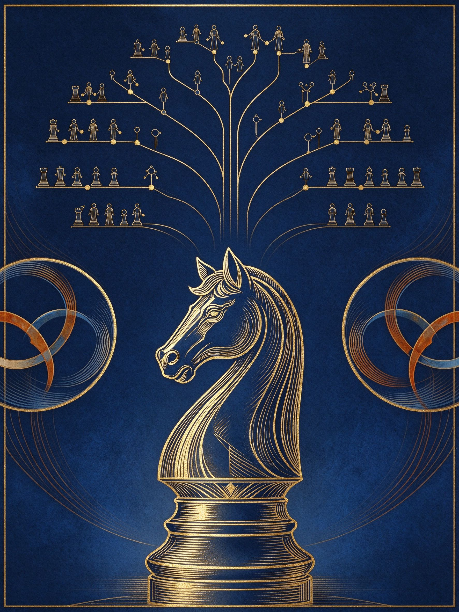
博弈论快速入门Game Theory Rush
本网页意在为对博弈论感兴趣或需要学习博弈论的人提供帮助。我希望尽可能地为学生学习博弈论、体会博弈论的魅力提供便利，因此在呈现这门学科总体架构和思想性的基础上，只保留基础数学层次的推导，并对一些较为复杂的模型，在函数关系上进行了简化，对于一些经典的例题，以交互式讲解器、图解等方式进行展开。此外，我尽量拓展了模型的隐喻和现实延伸意义。希望读者确实能通过本网页体会到博弈论的魅力。此外，本网页的内容深度基本足以应对顶级大学经济学专业的入学面试。
学习地图
矩阵博弈与纳什均衡
博弈论必然从囚徒困境和纳什均衡讲起。两个人同时出手，谁也看不见对方的选择，却必须把对方的选择算进自己的决定。这种互相影响是博弈论所研究的问题的基本特征。
序贯博弈与重复博弈
当同时出手变成出手有先后，就产生了新的情况和解法。先动的人能预判后动的人，也能用承诺改变预期；对方信不信，取决于真到那一步是否照做。可信与否成了新的变量。当博弈重复进行很多轮，信任、背叛和信用就出现了。
演化博弈论
也许每个学经济的人都会觉得「理性人假设」太粗糙，但当对象从个体转向种群，机制从理性计算变成竞争淘汰，你会发现即使排除「理性人假设」，很多理论不仅依然成立，甚至可能更加强大，有了更丰富的意义。
总结与复习
从知识和方法层面上总结内容，并阐述我对这门学科的位置与意义的个人理解。
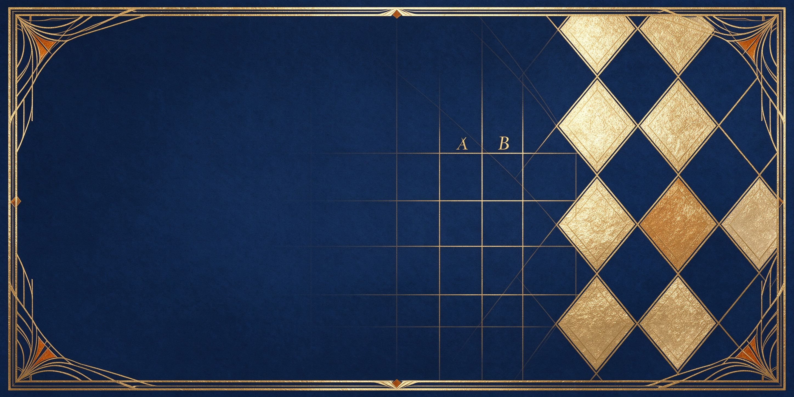
矩阵博弈与纳什均衡Matrix Games and Nash Equilibrium
1.1 博弈论导论 · 囚徒困境
博弈论 Game Theory
博弈论是用数学模型研究多个主体之间策略性互动的学科（the study of mathematical models of strategic interactions）。具体说，它研究的是：多个决策者（玩家）的行为会彼此影响，每个人会做出怎样的选择。这类场景的共同特征是相互依赖 (Interdependency)：我的选择取决于你怎么选，你的选择又取决于我怎么选。可以说，它研究的是 PVP，而不是 PVE。
囚徒困境的情境
两个嫌疑犯被隔离审讯，无法通气。每人只有两种选择：与同伙配合、对警察保持沉默，记作合作 (Cooperate)；或者供出同伙，记作背叛 (Defect)。两人各选一种，就有了 $2\times2=4$ 种组合；矩阵的每一格写成 $(X, Y)$，其中 $X$ 是玩家 1 的收益，$Y$ 是玩家 2 的收益。
- (10, 10) 两人都沉默，警方拿不到证据，双双免罪，各得 10。
- (0, 12) 玩家 1 沉默，玩家 2 供出同伙当了污点证人：玩家 2 得 12，玩家 1 因「抗拒从严」只得 0。
- (2, 2) 两人都招供，对警方已无争取价值，各得 2。
占优策略 Dominant Strategy
如果某个策略的最优性不依赖于对手怎么选，也就是无论对手做什么，它都带来最高的收益，这个策略就是占优策略 (Dominant Strategy)。如果在任何情况下都严格更优、从不只是打平，则称为严格占优策略 (Strictly Dominant Strategy)。
回到囚徒困境。若对方沉默，我招供得 12、沉默得 10，招供更好；若对方招供，我招供得 2、沉默得 0，招供仍然更好。对方怎么做，都不影响我的选择，所以「招供」是我的严格占优策略。玩家 2 的情形完全对称。
在矩阵上看更直接：把「对方沉默」「对方招供」两列并排，招供那一行的红数字在两列里都更大。占优策略的含义就是，不必猜对方会怎么做，只看自己这一行就够。
被支配策略 / 劣策略 Dominated Strategy
反过来看：如果无论对手怎么选，某个策略都不比另一个策略更好，那么它就被后者支配，称为被支配策略，也叫劣策略 (Dominated Strategy)。处处都更差、从不打平的，是严格劣策略；有时更差、有时打平的，是弱劣策略。
在囚徒困境里，「沉默」对双方都是严格劣策略：对手沉默时它更差，对手招供时它也更差。这与「招供是占优策略」说的是同一件事：一个策略占优，被它压住的策略自然就劣。
占优策略均衡 Dominant-Strategy Equilibrium
如果每个玩家都拥有占优策略，各人选出自己的那一个所构成的组合，就是占优策略均衡 (Dominant-Strategy Equilibrium)。它的推理门槛最低：每个人只需知道自己的收益，不必猜测对方会怎么做。
囚徒困境的均衡（招供，招供）=(2, 2) 就是占优策略均衡。不过这是少见的情形：多数博弈里没有人拥有占优策略，判断均衡就需要另一套标准，也就是下面要讲的纳什均衡。
纳什均衡 Nash Equilibrium
纳什均衡刻画的是博弈中的一种稳定状态：给定其他玩家的策略，每个人的策略都是自己的最佳反应 (Best Response)，因而没有任何一方能通过单方面改变策略而获益 (No Incentive to Deviate Unilaterally)。这里的「单方面」指只有我一个人改变、其他人都不动；只要这种改变无利可图，这个组合就是稳定的。用日常语言说，就是「对方不变，我也没有理由先变」。
在囚徒困境中，（招供，招供）既是占优策略均衡，也是纳什均衡。前者是后者的特例：占优策略必然满足「给定对方的选择、我不想改」，反过来则不成立。1.3 的性别之战会给出一个只有纳什均衡、没有占优策略的例子。
「看不见的手」与它的边界
看不见的手 (Invisible Hand) 是 Adam Smith 提出的判断：在某些制度与结构条件下，个人追求私利的行为会经由市场价格被引导到对社会有利的结果。这一判断后来由 Léon Walras 的一般均衡理论 (General Equilibrium) 加以数学化。
但囚徒困境给出了反例：个体理性并不保证整体最优。双方都沉默可得 (10, 10)，比 (2, 2) 对两个人都好，可谁也不愿单独迈出第一步，这个结果就落不了地。若一种改变能在不损害任何人的前提下让至少一人变好，经济学称之为帕累托改进 (Pareto Improvement)。囚徒困境的困境正在于，帕累托改进明明存在，却无法实现。
这也划出了「看不见的手」的边界：市场能把私利导向公益，前提是制度与结构让个人激励同社会结果一致；一旦两者背离，就需要沟通与协调，而协调通常要靠制度来完成。
思考题：为什么石油输出国组织 (OPEC) 这类卡特尔 (Cartel) 难以维持稳定？公共品供给中的搭便车、冷战时期的军备竞赛，以及经济学里的公地悲剧，看起来互不相干，它们与囚徒困境共享什么结构？
展开参考答案
寡头串谋提价后，单方降价可抢占更大份额，于是双方竞相降价，价格战由此形成。每一方都在为自己做最优选择，合起来却是更差的结果。
公共品供给中的搭便车、军备竞赛与公地悲剧，都属于同一结构：对各方更好的结果存在，但没有人愿意单方面先动，因此需要制度来协调。
1.2 深化理解 · 寡头三模型
1.1 的均衡概念在真实市场里有三种经典形态：产量、价格、位置。下面三个模型各对应一种，都以提出者命名。
古诺数量竞争 Cournot Quantity Competition
古诺模型 (Cournot Model) 由法国经济学家奥古斯丁·古诺于 1838 年提出，是最早的寡头竞争模型。市场上两家厂商生产同质产品，同时决定产量（而不是价格）。市场价格由两家总产量决定：产量越高，价格越低。
每家厂商在定产量时，把对方的产量当作既定，再选使自己利润最大的产量。把「给定对方产量、我方最优产量」这个对应关系画成函数，就是反应函数 (Best Response Function)。均衡时，两家对彼此产量的判断恰好一致，各自的选择也互为最优回应，这个组合就是古诺纳什均衡。
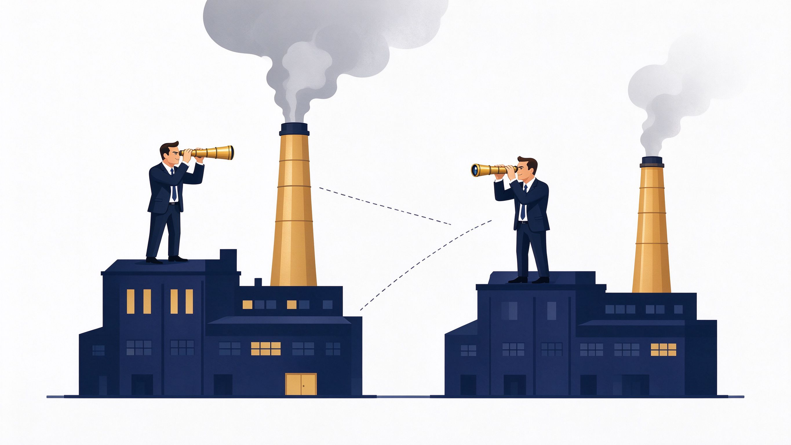
贝特兰价格竞争 Bertrand Price Competition
古诺模型里厂商竞争的是产量，贝特兰模型里竞争的是价格。假设两家产品完全同质、消费者无法区分，边际成本同为 $c$。顾客只买便宜的那家；若两家同价，市场平分。
在这样的设定下，任何一家只要把价格定得比对手低一点点，就能拿走全部市场。于是双方都有动力不断降价，直到价格压到边际成本 $P = c$，再降就要亏本。这个结果称为贝特兰悖论 (Bertrand Paradox)：市场上只有两家企业，价格竞争却得到了与完全竞争相同的结果，即价格等于边际成本、利润为零。
霍特林位置竞争 Hotelling Location Competition
霍特林选址模型 (Hotelling Model)：一条长度为 1 的街道，消费者均匀分布，两家厂商自由选择位置。价格固定且相同，消费者只去离自己最近的那家。
这个模型唯一的纯策略纳什均衡，是两家都挤在街道中点，称为最小差异化 (Minimum Differentiation)。道理很直接：若一家在中点左侧，另一家只要选在它右侧一点，就能拿走中点以右的全部顾客；反过来也一样。只有都在中点，谁移动都换不来更多份额。
加油站、快餐店和咖啡店常常开在对面，这一现象可以用选址博弈的均衡来解释。让一方先动的版本就是 2.2 的斯塔克伯格模型；环形街道、价格战与社会最优位置的完整分析见 1.5 习题 1。
1.3 占优策略均衡与纳什均衡
「招供是我的占优策略、沉默是我的严格劣策略」，这套推理不只对囚徒困境管用。把它系统化，就得到两件可以反复使用的工具：占优与剔除、最佳回应标记。
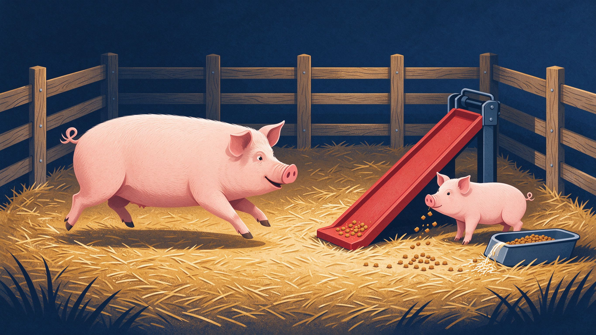
重复剔除严格劣策略 IDSDS
既然理性玩家绝不会选严格劣策略，就可以把它的整行（或整列）直接划掉。矩阵缩小之后，再检查有没有新的严格劣策略出现，如此反复，直到挑不出来为止。这套做法叫重复剔除严格劣策略 (Iterated Deletion of Strictly Dominated Strategies, IDSDS)；能这样一路解到底的博弈，称为「重复剔除占优可解的」。
以智猪博弈为例：小猪的「踩」是严格劣策略，整列划掉以后，大猪只剩「踩」可选，一步就解完了。
两个前提必须记牢：
- 必须是「严格」劣：处处都更差，只要有一处打平，就不能这样划掉。
- 需要理性的共同知识 (Common Knowledge of Rationality)：不仅每个人理性，还要每个人知道别人理性、知道别人知道别人理性，如此递推。
两种求均衡的方法可以并列使用（表 2 与表 3 的求解面板都能切换）。方法 A · 最佳回应标记法：在完整矩阵里圈出双方的最佳回应，双圈相交处即均衡。方法 B · 剔除严格劣策略：把严格劣的整行整列灰掉，在剩下的矩阵里继续分析。两种思路不同，却常常指向同一个答案。
广场上喊出的那一声
1989 年 12 月 21 日，布加勒斯特的党中央广场举行了一场约十万人的群众大会，齐奥塞斯库在阳台上讲话，这场集会本来是为了展示举国拥护。讲话进行到一半，广场一角有人喊出「打倒齐奥塞斯库」（"Down with Ceaușescu!"），电视转播随即中断；没过多久，反对的口号声汇成了一片。第二天政权垮台，四天后夫妇二人被处决。
值得停一下的是那一声之前。前面说理性的共同知识要「我知道你知道我知道」一直递推，怀疑也一样。几乎每个人都可以私下不信这套统治，但每个人在公开场合看到的，都是别人鼓掌、喊支持。于是每个人都以为只有自己在怀疑，「大家都怀疑」并不是共同知识。这种状态叫多元无知 (Pluralistic Ignorance)：私下不认同，却因为看不见别人的私下态度，继续照着公开的样子做。一套统治因此可以只建立在「没人知道别人也不服」上面，不必真的有人心悦诚服。
那声口号改变的是信息结构。它把「原来别人也不信」变成公开可见、人人知道人人知道的事实，怀疑第一次成了共同知识。继续装作拥护就没了理由，因为这种表演的作用本来是影响别人对局势的判断。《皇帝的新衣》里小孩子做的事与此相似：他未必比大人更聪明，只是把一件人人看见、却没人敢公开确认的事说了出来。真相一经公开，游行就撑不下去了。
用本章的话说，均衡不只看每个人怎么想，还要看每个人以为别人怎么想。广场上的人，偏好和支付在那几分钟里几乎没有变，变的是大家对这些偏好的共同信念。共同知识一旦形成，原来的均衡可以在几分钟里换掉。
用剔除严格劣策略解囚徒困境
固定囚犯 B 的选择，逐列比较囚犯 A 的红数字：「沉默」在每一列里都严格更差（10 < 12、0 < 2），所以它是 A 的严格劣策略，整行划掉。B 完全对称，「沉默」也是他的严格劣策略，整列划掉。
一轮剔除之后，矩阵只剩一格：（背叛， 背叛） = (2, 2)。它既是占优策略均衡，也是纳什均衡。要注意的是，囚徒困境能这么干脆地解掉，是因为双方都有严格劣策略；一旦没有，剔除就启动不了，下面的 3×3 矩阵和 1.4 的性别之战都属于这种情形。
剔除在智猪这里一击见效。下面换一个谁都没有占优策略、也没有严格劣策略的矩阵，剔除就此失效，只能改用「圈最佳回应」。
这是一张抽象练习矩阵：R1–R3 与 C1–C3 只是策略编号，格里的数字专为演示「剔除失效」与圈最佳回应而设，不必替它们找现实含义。
性别之战：有些博弈有多个纳什均衡
周末晚上，妻子和丈夫一起出门。妻子偏好歌剧院，丈夫偏好足球场，但两人都更愿意待在一起；一旦分开行动，双方都是 0。支付矩阵如下（红 = 妻子收益，蓝 = 丈夫收益）：
| 妻 ＼ 夫 | 歌剧 | 足球 |
|---|---|---|
| 歌剧 | (3, 2) ★ | (0, 0) |
| 足球 | (0, 0) | (2, 3) ★ |
用最佳回应标记法可以找到两个纯策略纳什均衡：（歌剧， 歌剧） = (3, 2) 与 （足球， 足球） = (2, 3)。所以纳什均衡不唯一；最终落在哪一个，取决于双方的协调、惯例或某个「焦点」(Focal Point)。
多个均衡与协调问题
上面那张 3×3 只有一个纳什均衡，结局好预测。但只要改动一个数字，局面就会变：把 R3C1 从 (0,300) 改成 (0,150)，得到下面这张矩阵（改动格用红框标出）。
解出来：两个纯策略均衡同时存在：(R2,C2) = (1,1) 与 (R3,C3) = (200,200)。而 (R1,C1) 这次不再是均衡：站在 R1 这一行，C 的最优回应是 C3 的 101，而不是 C1 的 100。
两个均衡的收益相差悬殊：(1,1) 对双方都很糟，(200,200) 对双方都好得多。既然更好的结果摆在那里，需要考察的就是：参与者能否仅凭自己走到那里。
难处在于「必须同时动」。假设双方因习惯或历史偶然已经落在 (R2,C2)：此时任何一方单独改成 R3 或 C3，收益都会从 1 掉到 0，所以谁都不肯先动；而只要两人一起改，就能一步跳到 (200,200)。这类情形通常称为协调问题 (Coordination Problem)：对双方都更好的结果确实存在，但要达成它必须两人同时改变。
这也是主张政府或第三方干预市场的一条理由：提供信息、出面协调、为合作提供担保。这些做法都在替参与者解决「必须同时行动」这个技术难题。行业协会推统一标准、政府牵头建产业联盟、平台规定统一接口，做的都是这件事。
这里还要说清纳什均衡的含义：它只保证「谁都不想单独偏离」，并不保证「已经落在最好的那个均衡上」。
1.4 纯策略与混合策略纳什均衡
纯策略 vs 混合策略
纯策略 (Pure Strategy) 指确定地选择某一个行动，比如「总是出石头」，即以概率 1 选择该策略。
混合策略 (Mixed Strategy) 指按一定的概率分布随机选择各个纯策略，比如「以 1/3 出石头、1/3 出剪刀、1/3 出布」。要注意「随机」不等于「随便」：概率必须算出来，靠感觉出牌不算混合策略。
在混合策略纳什均衡中，双方按特定概率分布行动，任何一方单方面改变这个分布都无法提高期望收益。求解的原则是「让对手无差异」(Make Opponent Indifferent)：只有当对手觉得选哪个都一样时，他才愿意保持随机。
混合策略怎么求：无差异法三步
在混合均衡里，若两个纯策略的期望收益不相等，概率会全部压到收益更高的那个上，那就不再是混合策略。所以均衡处两者的期望收益必然相等。还要注意方向：我求出的概率是用来让对手无差异的，解出的是对方的混合比例。
- 设概率：设行玩家以 $p$ 选上、$1-p$ 选下；列玩家以 $q$ 选左、$1-q$ 选右。
- 令对方无差异：写出行玩家两个纯策略的期望收益（只含 $q$），令其相等，解出 $q$；再写出列玩家两个纯策略的期望收益（只含 $p$），令其相等，解出 $p$。小心交叉：解出的是对方的概率。
- 验算：把求得的概率代回，确认两边的期望收益确实相等，且都在 $[0,1]$ 内。
为什么要随机化？随机化是为了不被对手预测，足球点球、石头剪刀布都是如此。「让对手无差异」的含义也在这里：对手怎么选都一样赚，也就没有可针对的方向。
适用提示：若博弈存在纯策略均衡，也可能同时存在混合均衡（如性别之战）；若完全不存在纯策略均衡（如匹配硬币），混合均衡就是它的解。
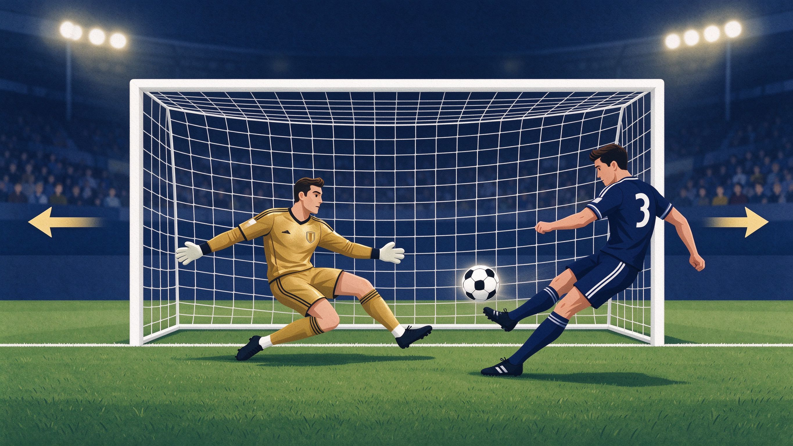
教材里更常见的版本：匹配硬币 Matching Pennies
在博弈论教材里，这个博弈几乎总以「匹配硬币 (Matching Pennies)」的形式出现：两人各拿一枚硬币，同时亮出正面或反面。它与点球结构完全相同：2×2 零和、没有纯策略均衡、混合均衡都是各 1/2。
教材偏爱硬币，是因为它更「无国界」：硬币的正反面几乎人人能懂，而点球带有足球文化色彩，对不熟悉足球的学生要多跨一道门槛。下面按教科书例题的标准写法，把这个游戏完整陈述一遍。
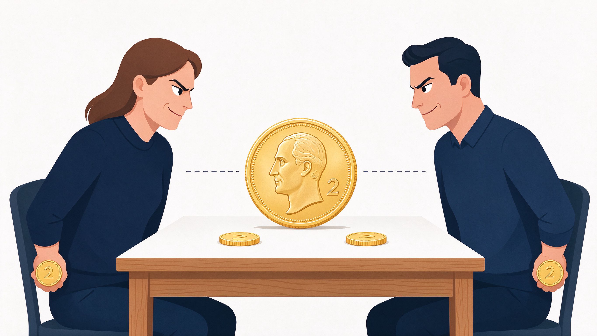
Matching Pennies
Setup. Two players, 1 and 2, simultaneously choose to show one side of a coin: Heads (H) or Tails (T). If the coins match — both H or both T — Player 1 wins and Player 2 loses; if they do not match, Player 2 wins and Player 1 loses. Winning a round is worth +1 and losing it −1.
Payoff matrix. Entries are ordered (Player 1, Player 2):
| P1 ＼ P2 | Heads | Tails |
|---|---|---|
| Heads | (+1, −1) | (−1, +1) |
| Tails | (−1, +1) | (+1, −1) |
Solution.
- (i) Zero-sum. Whatever one player wins the other loses, so the two payoffs in every cell add to zero.
- (ii) No pure-strategy equilibrium. In each of the four cells, exactly one player would strictly prefer to switch.
- (iii) Mixed equilibrium. Nash's existence theorem therefore guarantees a mixed-strategy equilibrium, and by symmetry it is the profile in which each player randomises 50–50 between Heads and Tails.
- (iv) Payoffs at equilibrium. Each player's expected payoff is 0, and neither can raise it by shifting probability towards either side — which is exactly why the 50–50 mix is an equilibrium.
The general lesson: a mixed equilibrium is pinned down by the opponent's indifference point, not by your own preference. You randomise in order to keep your opponent exactly indifferent — which is why a predictable player always loses.
Source. Matching Pennies is the standard textbook illustration of mixed strategies. Original treatment: Gibbons, R. (1992), Game Theory for Applied Economists, Princeton University Press, §1.3, pp. 29–33 — the payoff matrix appears on p. 29 and the best-response figures (Figs. 1.3.1–1.3.2) on p. 32. Another standard source is Osborne, M. J. & Rubinstein, A. (1994), A Course in Game Theory, MIT Press, p. 14. The statement above is a standard write-up of this example, not a verbatim quotation.
1.3 的表 4 里，性别之战有两个纯策略均衡；换一个视角看，它还有第三个均衡：双方按一定概率随机选择。
先把表 9 读懂
两只动物争夺一份价值 $V = 100$ 的资源。各自只有两种做法：鹰一路强攻，直到赢下来或受伤退场；鸽只摆姿态，遇到真动手的就让开。打架受伤的代价是 $C = 150$。
四格收益由此算出来。鹰遇鹰两败俱伤，各得 $\dfrac{V-C}{2} = -25$；鹰遇鸽，鹰独占整份 $V = 100$，鸽退开得 0；鸽遇鸽不动手，平分资源各得 $\dfrac{V}{2} = 50$；反过来鸽遇鹰就是 0 与 100。红数字是行玩家的收益，蓝数字是列玩家的收益。
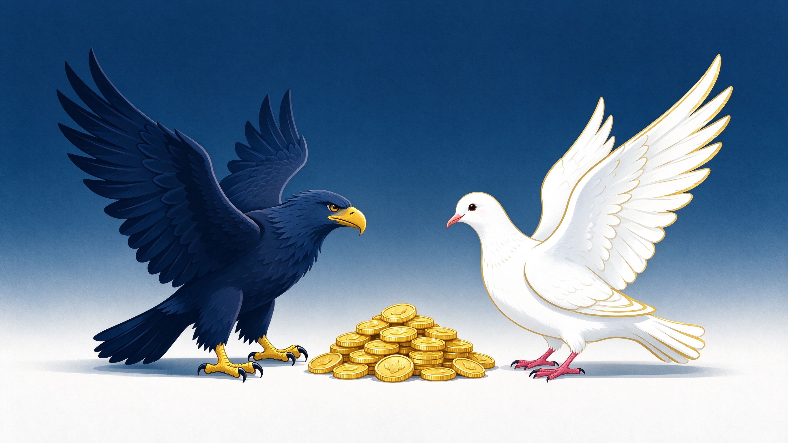
纳什存在定理 Nash's Existence Theorem
每个有限博弈都至少存在一个纳什均衡（有限博弈指玩家有限、每人纯策略有限），它可能是纯策略均衡，也可能是混合策略均衡。
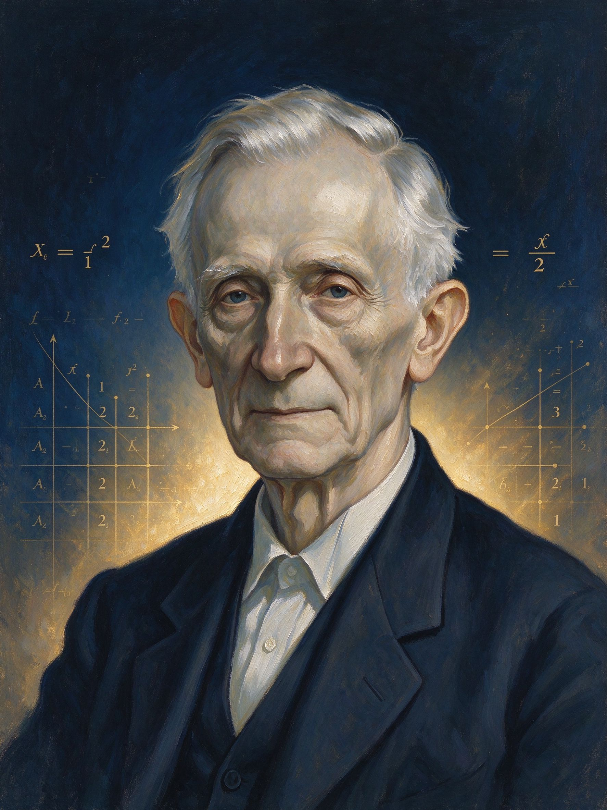
约翰·纳什：用一篇 28 页论文改变了经济学
约翰·福布斯·纳什 (John Forbes Nash Jr., 1928–2015)，美国数学家。1950 年，22 岁的纳什在普林斯顿大学完成博士论文《非合作博弈》(Non-Cooperative Games)。论文全文 28 页，提出了后来以他命名的纳什均衡 (Nash Equilibrium)，由此改变了经济学与社会科学分析互动行为的方式。
1994 年诺贝尔经济学奖：纳什与莱因哈德·泽尔腾 (Reinhard Selten)、约翰·海萨尼 (John Harsanyi) 共同获奖，表彰他们「在非合作博弈论中对均衡的开创性分析」（"for their pioneering analysis of equilibria in the theory of non-cooperative games"）。此时距那篇 28 页的博士论文已过去 44 年。
《美丽心灵》(A Beautiful Mind)：纳什与精神分裂症抗争数十年的经历，被记者西尔维娅·娜萨 (Sylvia Nasar) 写成传记《美丽心灵》，2001 年由朗·霍华德 (Ron Howard) 改编为同名电影，罗素·克劳 (Russell Crowe) 饰演纳什。影片获 2002 年奥斯卡最佳影片等四项大奖，博弈论与纳什均衡也由此进入大众视野。
2015 年 5 月 23 日，纳什与妻子艾丽西亚在挪威领取阿贝尔奖 (Abel Prize) 后返回美国，在新泽西州乘出租车时遭遇车祸去世，享年 86 岁。
1.5 课后习题
每道题都给出分步求解，建议先独立尝试，再对照解答。
博弈设定：奶茶MM 与奶茶GG 在一条长度为 1 的街道上摆摊。每杯奶茶的单位成本为 $c$。顾客均匀分布在整条街上，每人买一杯，净效用为 $10 - P - t \cdot d$：$P$ 是价格，$t$ 是单位距离的交通成本，$d$ 是顾客到店的距离。顾客选择净效用更高的那家；若两家一样近，则平分。
问题(1) · 直线街的位置博弈均衡：假设价格 $P$ 固定且两家相同，两家店只选位置。纯策略纳什均衡是什么？两家会开在哪里？
问题(2) · 环形街：若街道不是直线，而是周长为 1 的圆环（顾客按较短的那段弧计算距离），位置博弈的纯策略纳什均衡是什么？与直线街有何不同？
问题(3) · 在(1)的均衡位置上展开价格战：回到直线街，两家已选在(1)的均衡位置。现在允许它们同时定价 $P_1$ 与 $P_2$，求价格博弈的纳什均衡以及各自的利润。
问题(4) · 政府国有化与社会最优位置：若政府将两家店国有化，目标改为最小化全部顾客的总交通成本（价格不再是竞争变量），两家店应分别设在哪里？与(1)的纳什均衡位置有何不同？这说明了什么？
问题(5) · 高交通成本与服务半径限制：若交通成本 $t$ 高到顾客不愿走到距离超过 0.25 的店（只有 $d \leq 0.25$ 的顾客会购买），位置均衡会如何变化？市场是否仍被完全覆盖？
行玩家 R 有 4 个策略 R1–R4，列玩家 C 有 4 个策略 C1–C4。支付矩阵如下（红数字 = R 的收益，蓝数字 = C 的收益）。双方理性，且「双方理性」是共同知识。
问题(1)： 行玩家 R 和列玩家 C 中，任何一方是否存在占优策略？
问题(2)：用重复剔除严格劣策略 (Iterated Deletion of Strictly Dominated Strategies, IDSDS) 逐步剔除，求出最终结果。
问题(3)： 通过 IDSDS 求出的结果属于哪一种均衡概念（占优策略均衡、纳什均衡，还是其他）？
⚠️ 两处「大数字陷阱」，都很容易看错：
① R3 行 C4 挂着 50、R4 行 C4 挂着 100。数字很诱人，但 C4 在第一轮就被剔除了。策略一旦出局，它的收益再高也不会实现。
② R4 行给 C 的收益是 93、92、91、90。数字很大，可那是列玩家 C 的收益，救不了行玩家 R。
下面的矩阵刻画了税务局查税与企业逃税之间的博弈（红数字 = 企业收益，蓝数字 = 税务局收益）：
| 企业 ＼ 税务局 | 查 (Audit) | 不查 (No Audit) |
|---|---|---|
| 逃税 (Evade) | (−1, 1) | (3, −2) |
| 不逃 (Comply) | (2, −1) | (2, 2) |
问题(1)： 本博弈是否存在纯策略纳什均衡？请逐格检查并说明理由。
问题(2)： 求混合策略纳什均衡，即企业应以多大的概率选择逃税、税务局应以多大的概率选择查税？（提示：利用「令对方无差异」的方法。）
问题(3)： 本模型的经济意义是什么？例如：提高逃税罚款会如何影响均衡？增加查税成本又会如何影响？
（同一博弈的可交互版本见 1.4 的 表 7）
下面的矩阵刻画两玩家争夺资源 V (Value)。双方同选鹰策略时，各自要付打架成本 C (Cost)，通常 C > V：
| 玩家1 ＼ 玩家2 | 鹰 (Hawk) | 鸽 (Dove) |
|---|---|---|
| 鹰 (Hawk) | (V−C)/2, (V−C)/2 | (V, 0) |
| 鸽 (Dove) | (0, V) | (V/2, V/2) |
问题(1)： 本博弈是否存在纯策略纳什均衡？如果有，是哪些策略组合？
问题(2)： 假设资源价值 $V = 100$、打架成本 $C = 150$（满足 $C > V$），求本博弈的混合策略纳什均衡，即双方应以多大的概率采取鹰策略？
问题(3)： 对一般化的 $V$ 和 $C$（其中 $C > V$），推导混合策略纳什均衡的一般表达式。当 $C$ 增大（打架更痛）时，采取鹰策略的均衡概率会如何变化？
问题(4)： 如果 $C < V$（打架的代价比抢到的资源还便宜），结果会怎样？此时鹰会不会成为占优策略，上面求出的 $p^* = V/C$ 还落在概率范围内吗？
（同一博弈的可交互版本见 1.4 的 表 9；3.2 还会从演化视角再分析一次）
博弈设定：著名的「吉诺维斯谋杀案」(Kitty Genovese) 中，$n$ 个目击者同时看到袭击。每人可以选择报警（付出个人成本 $c$，如时间、可能的报复风险）或漠视（不付出成本）。只要有一个人报警，受害者就得救，全体目击者都获得效用 $v$（$v > c$，救人的价值大于报警成本）。若所有人都漠视，受害者死亡，全体得 0。
问题(1)： 本博弈是否存在纯策略纳什均衡？如果有，描述这些均衡的特征。
问题(2)：求对称的混合策略纳什均衡，即每个目击者以多大概率 $p$ 报警？（提示：令报警与漠视的期望收益相等。）
问题(3)：在混合均衡下，「至少有一人报警」的概率是多少？它随人数 $n$ 如何变化？这对应什么社会现象？
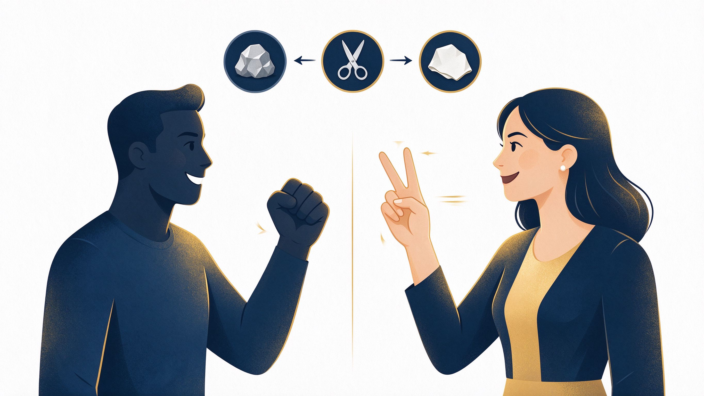
两人同时出「石头 (Rock)」「剪刀 (Scissors)」「布 (Paper)」中的一种。规则：石头砸剪刀、剪刀剪布、布包石头。赢者得 +1，输者得 −1，平局各得 0。支付矩阵如下（红 = 玩家 1 收益，蓝 = 玩家 2 收益）：
问题(1)： 本博弈是否存在纯策略纳什均衡？请逐格检查最佳回应并说明理由。
问题(2)： 求混合策略纳什均衡，即每个玩家应以多大的概率分别出石头、剪刀、布？（提示：利用「令对方在三个策略间无差异」。）
问题(3)：职业石头剪刀布比赛中，选手为什么会刻意随机化（甚至借助外部随机数生成器）？若一名选手有规律地出拳，比如总是先出石头，对手会如何利用这一点？
本章术语 · 双语 Glossary
第 1 章 · 矩阵博弈点击卡片展开详细释义与例句。输入关键词可筛选（支持中/英文）。
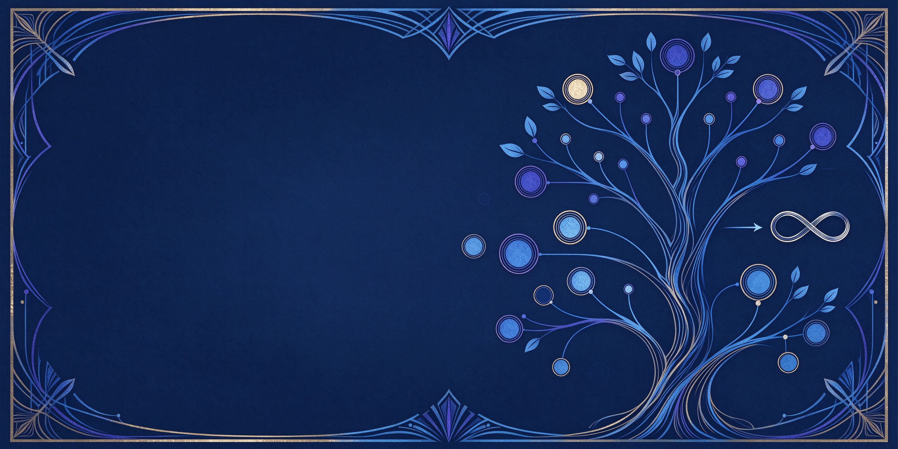
序贯博弈与重复博弈Sequential Games and Repeated Games
2.1 序贯博弈与博弈树
序贯博弈与博弈树 Game Tree
第一章讨论的博弈，玩家都是同时出手。现实里却有大量决策有先后顺序：一方先动，另一方看到了再动。这类博弈叫序贯博弈 (Sequential Game)。因为能看见对方的选择，分析时多出两样东西：时间维度（可以先下手为强）与可信性（先动的人放出的威胁，后动的人会不会当真）。
描述序贯博弈的工具是博弈树 (Game Tree)，读法如下：
- 决策节点 (Decision Node)：标着「轮到谁做决定」的那个点。
- 分支 (Branch)：从节点伸出的每一条线，代表该玩家可以选的一个行动。
- 子博弈 (Subgame)：从某个决策节点往后看剩下的那部分博弈，它本身也是一个完整的博弈。
- 终端节点 (Terminal Node)：树梢，标注沿这条路走下来双方的支付对。
- 信息集 (Information Set)：把「玩家分不清」的节点连在一起。这里假设完全信息 (Complete Information)，每个人都看得到此前发生的一切，所以每个信息集里只有一个节点。
最经典的序贯博弈，是市场进入博弈。
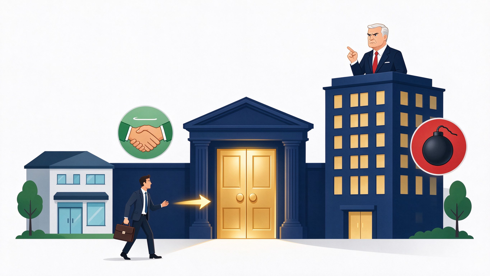
逆向归纳 Backward Induction
求解序贯博弈的标准方法是逆向归纳法 (Backward Induction)：从博弈树的末端开始倒着往前推，逐层确定每个玩家的最佳选择。
之所以从末端开始，是因为越靠后的决策越简单：到了最后一个决策点，已经不存在后续顾虑，只需在眼前几个结果里挑最好的那个。算完最后一层，就把这一层折叠成它的结果（即最优选择带来的支付），再往前一层重复同样的操作。一路推回起点，就得到了完整的均衡路径。上面的市场进入博弈演示的就是这个过程。
子博弈完美纳什均衡 SPNE
子博弈完美纳什均衡 (Subgame Perfect Nash Equilibrium, SPNE) 也叫子博弈精炼纳什均衡，是序贯博弈中最常用的均衡概念。它指的是不包含任何不可置信行动的战略所组成的纳什均衡：战略在每一个决策点上都规定了一个行动，无论博弈走到哪里，这个行动都必须是那里最优的。
战略要在每个决策点上都最优，而不只是在均衡路径上最优。这就排除了「嘴上说说、真到执行时不会做」的不可信威胁。
求法就是逆向归纳：从末端把不可置信的威胁逐个剔掉。市场进入博弈的 SPNE 是（进入， 容纳） = (1, 1)。
不可置信威胁 (Incredible Threat)：根源与四个现实投影
根源：事前最优与事后最优并不一致。放狠话时对我有利，真要执行时就变成对我有害。人们能预见到这一点，威胁由此失效，许多帕累托有效的结果因此无法实现。
想想这四个问题，都源于同一结构：
- 劫机事件为什么会发生？（扬言「同归于尽」听起来不可信，可一旦对方真信了，它就有威慑力）
- 管教孩子为什么困难？（「再闹就不要你了」事前省钱，事后再舍不得）
- 家族企业为什么难以实行制度化管理？（对亲属「按规矩办」的承诺事后难以执行）
- 大企业为什么效率低？（总部「严惩失职」的威胁，到了分部既难查证也难下手）
破解思路：人们的行为受情绪支配，以理性判断为「不可置信」的威胁反而可能是可信的。所以建立一个「感情用事」的名声，本身可能是理性的选择。
懦夫博弈 Chicken Game
两辆车迎面冲向对方：谁先打方向盘让开，谁就「认怂」；两人都不让，就迎头相撞。
- 直行 (Go) = 不让、抢道；转向 (Swerve) = 让路；
- 撞车（双方都直行）对两个人都是最坏结果；
- 单方让路：让路的一方丢面子（负收益），另一方抢到道；
- 双方都让：什么也没赢，什么也没输。
可信承诺：把方向盘拆掉
市场进入博弈里，B 的「反击」威胁不可信，因为真到那一步容纳更划算。懦夫博弈问的是相反的问题：怎样才能让一个威胁变得可信。
办法是自缚手脚 (commitment)：提前把方向盘拆下来、当众扔掉钥匙。当「转向」这个选项根本不存在，「我绝不转向」就从一句空话变成事实，对手只剩让路一条。
现实中的例子有核威慑与「相互确保摧毁」、边缘政策 (brinkmanship)、罢工前公开立誓不退，以及企业「破釜沉舟」式的沉没成本承诺。它们的共同点是：可信度取决于主动放弃了多少退路，决心本身并不构成承诺。市场进入博弈里的 B 想做而做不到的，正是这件事。
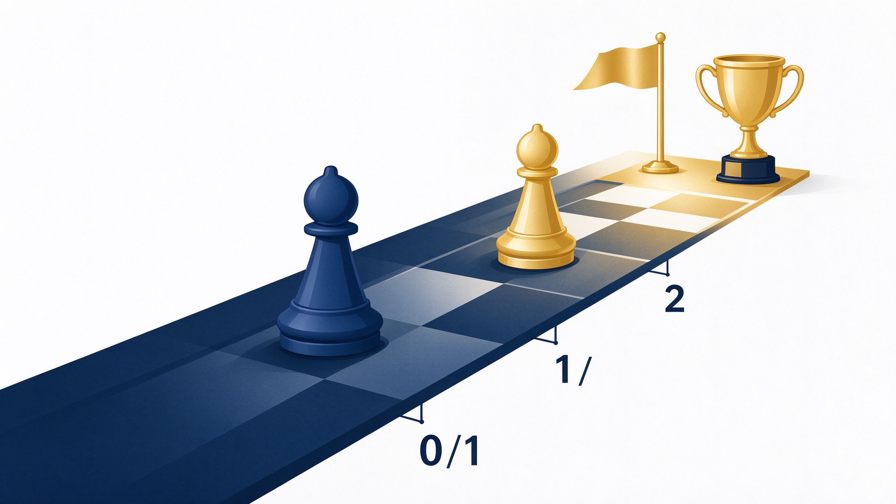
求下列各组起始距离 $(d_1, d_2)$ 的子博弈精炼均衡策略与最终收益。建议先独立推演（至少 (1,1)、(2,1)、(3,1) 三组），再展开对照：
| 起始距离 $(d_1,d_2)$ | 均衡行为 | 得分 (P1, P2) | 为什么 |
|---|---|---|---|
| (1, 0) | P1 走 0;P2 走 0 | (0, 5.5) | P2 已在终点，先手也追不上 → P1 干脆不动，否则白付代价 |
| (1, 1) | P1 第一轮走 1 步 | (4.5, 0) | 先手优势：一轮到达，得 $5.5-1=4.5$；P2 来不及 |
| (2, 1) | P1 第一轮走 2 步 | (2.5, 0) | 必须抢在 P2 之前，代价 3 也值得：$5.5-3=2.5$ |
| (3, 1) | P1 走 0;P2 走 1 步 | (0, 4.5) | P1 距离太远、无法一轮到达，而 P2 下一轮就能到 → P1 输定了，不动 |
| (3, 3) | P1 每轮走 1，第 3 轮先到 | (2.5, 0) | 距离相等，先手者赢；P1 走出第一步后 P2 已输定，不移动 |
| (4, 4) | P1 每轮走 1，第 4 轮先到 | (1.5, 0) | ← 2.4 习题 1 要分析的情形：$5.5-4=1.5$ |
两人从 0 开始交替报数，一次报 1 个或 2 个数，谁报到 30 谁赢。先手有优势还是后手有优势？若每次可选 1–3 个数，结论会不会变？
展开参考答案
用倒推法：想报到 30，必须先抢到 27，因为对方只能报到 28 或 29，我随后补足 30；要抢到 27，又必须先抢到 24，如此往前推，必胜位置就是 3 的倍数：3、6、9……27。所以先手只要开局报「1、2」抢到 3，此后对手报 $k$ 个数，我补 $(3-k)$ 个，就能一路踩住 3 的倍数，先手必胜。若每次可选 1–3 个数，必胜位置变成「4 的倍数加 2」，即 2、6……30，先手开局报 2 个数即可，结论不变。
2.2 先手优势与后手优势
同一个博弈，只因行动次序不同，结果就可能不同。日常游戏里先手与后手的不平等，根源也在此。
斯塔克伯格数量竞争 Stackelberg Quantity Competition
把 1.2 的古诺模型改一处：两家厂商不再同时决定产量，而是一家先动。先定产量的叫领导者 (Leader)，后定的叫追随者 (Follower)。追随者能看见领导者的产量，再决定自己产多少。
斯塔克伯格模型是讨论先手与后手最常用的例子：两家厂商、同一个市场、同样的成本，唯一的区别是谁先决定产量。
先手优势与后手优势 First- vs Second-Mover Advantage
先手优势 (First-Mover Advantage) 指先动的一方因为能先落子、而且知道对方只能在自己之后应对，从而得到更大的收益。斯塔克伯格模型是标准例子：领导者的产量与利润都高于古诺水平，追随者则都低于古诺水平。
后手优势 (Second-Mover Advantage) 指后动的一方若能看清先手的选择再出手，反而因为信息更全而占便宜。典型场景有三类：竞品先定价，跟进者直接针对其价位出招；招投标中后报价的一方；以及模仿者，不必承担先行验证市场的成本。
「谁先动」本身没有绝对的好坏，它是一种可以被定价的资源：先手换来市场、渠道与标准，后手换来信息与更低的风险。
为什么有些游戏天生就不公平？
「先手优势」不只出现在经济学里。回想两个大家都玩过的游戏：
- 井字棋 (Tic-Tac-Toe)：先手只要不出错，至少能逼成平局，后手根本赢不了。这个游戏的最优结果因此是先手不败，所以它很快就被玩腻了。
- 五子棋 (Gomoku)：不加限制时，先手优势大到可以必胜。所以正式比赛必须加补偿：黑棋（先手）受「禁手」规则限制，或者改用「三手交换」，把先手占的便宜收回去一部分。
同类现象还有：围棋的贴目、象棋与围棋的让先 / 让子，以及各类赛事为了公平而采用的轮流先手。
先后顺序带来系统性的收益差，规则设计者通常会设置补偿机制。五子棋的禁手、围棋的贴目与赛事中的轮流先手，都是对先手优势的再平衡。补偿的具体形式不同，但目的都是降低先后顺序对结果的影响。
思考题：「先动」一定更好吗？请各举一个「先手优势」和「后手优势」的现实例子，并说明：在什么条件下，先手优势会变成先手劣势？
展开参考答案
先手优势的例子：抢占黄金地段的门店、抢先注册的标准与专利，以及先建立的品牌认知。位置和心智一旦占住，后来者要付出数倍成本才能撬动。
后手优势的例子：后定价的竞品可以直接针对对手的价位出手；技术路线未定时的「快速跟随者」不必替市场交学费；招投标中的最后一轮报价。
什么时候先手变劣势？① 要先承担不确定性：需求没验证、技术没定型时，先动者替所有人试错；② 会过早暴露信息：定价、成本、渠道一旦亮出来，对手就能针对性狙击；③ 可能被锁定：标准选错、产能建错，掉头成本极高。
判断的依据是优势的来源：来自占位（渠道、标准、专利、品牌）时，先手更值；来自信息（需求未知、对手可观察）时，后手更值。
2.3 最后通牒博弈与海盗分金
最后通牒博弈是最简单的两阶段序贯博弈，海盗分金是它的多人版本。两者都用逆向归纳求解，后者的结果与直觉相差更远。
最后通牒博弈
最后通牒博弈只有一个回合：提议者 (Player 1) 面对 100 美元，先提出一个分配方案；回应者 (Player 2) 只能选择接受或拒绝。接受就按方案分钱，拒绝则两人一分不得。
用 2.1 的逆向归纳推一遍。轮到回应者时，只要方案给他的钱是正数，「接受」就比「拒绝」拿 0 要好，因此他会接受任何正数。提议者算准这一点，就会只分给对方 0.01 美元，自己留下 99.99。这是严格理性的预测。
但实验室结果几乎相反：低于 30 美元的「不公平」出价经常被拒绝，回应者宁可自己一分不得，也要让提议者拿不到。
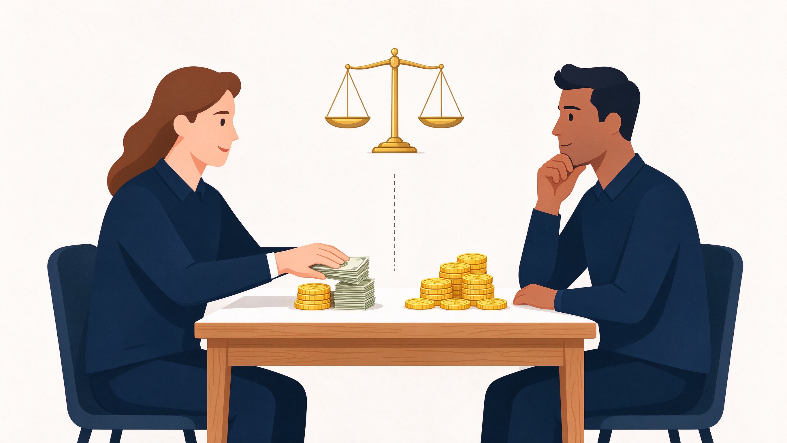
实验事实：大多数人会拒绝远低于 30 美元的分成，哪怕这意味着双方都一无所获。
纯理性的预测失败了：若每个人只最大化当期金钱，回应者应当接受一切正数，提议者会只分给对方 0.01 元。但这种出价几乎从不在现实中出现。
拒绝是一种信号：拒绝 0.01 元看似损失了 0.01，实际是在传递「我不好欺负」的信号。在重复的社会互动中，这个名声有助于提高未来的谈判地位。
这里涉及的「不能被预测地拒绝」属于 2.4 重复博弈的主题：看重长期名声，才愿意牺牲眼前一点钱；而「人为什么会本能地拒绝不公平」，3.4 会从演化视角再作解释。
2.4 重复博弈
序贯博弈 vs 重复博弈
序贯博弈 (Sequential Games)：玩家按先后顺序行动，前一个决策点的选择会改变后续子博弈的结构。每一步都只走一次，不存在重复相同结构的局面。
重复博弈 (Repeated Games)：同一个结构的「阶段博弈」被反复进行，前一轮的结果不改变后一轮的博弈结构。它引入了时间维度：玩家可以依据对手过去的行为决定当下的选择，比如「你上轮背叛了，我这轮就惩罚你」。这种基于历史的奖惩会改变一次性博弈的结局，最典型的例子是重复囚徒困境：只要双方足够看重未来，合作就可以成为均衡。
为什么必须是「无限」次：末期效应
有限次重复博弈无法支撑合作，原因是末期效应 (Endgame Effect)。以重复两次的囚徒困境为例：用倒推法看，最后一次等同于一次性博弈，双方必定背叛；再往前推，既然知道下一轮会背叛，这一轮也背叛，结果是每一轮都背叛。
所以「关系会一直持续下去」这个信念本身，就是合作得以维持的重要条件。2.5 习题 1 的竞速棋里，「输定就不动」用的也是同一类倒推逻辑。
无限次重复与贴现因子 δ
无限次重复博弈 (Infinitely Repeated Games)：博弈无限期进行，或者玩家无法预料它何时结束（在数学上等价于无限期）。由于收益分散在未来许多轮中，需要把未来的收益贴现 (Discount) 到今天，用贴现因子 $\delta$（$0 < \delta < 1$）衡量「未来的一块钱在今天值多少」。$\delta$ 越接近 1，说明玩家越有耐心、越看重未来。
等比数列求和：若每期支付都是 1，无限期的总支付为 $$1 + \delta + \delta^{2} + \cdots = \frac{1}{1-\delta}$$ 这是后面推合作条件的基本工具，2.5 习题 2 求的就是「$\delta$ 要多大，合作才成立」。
回到一次性博弈：一次博弈的唯一均衡是不合作。但若博弈无限重复，合作就可能出现，这是重复与一次性之间最关键的区别。
触发策略与以牙还牙
触发策略 / 冷酷策略 (Trigger / Grim Strategy)：从合作开始，一旦对方背叛，此后永远不再合作。这个策略的惩罚极为严厉，一次背叛就触发永久报复，没有原谅的余地。它的优势是威慑力最强，缺点是一旦出现误解或偶然失误，合作就永远无法恢复。
以牙还牙 (Tit-for-Tat, TFT)：从合作开始，之后每一轮都复制对方上一轮的行动：对方上轮合作，我这轮就合作；对方上轮背叛，我这轮就背叛。这个策略看似简单，阿克塞尔罗德却把它的成功归结为四个特点：善良、可激怒、可原谅、清晰。早在汉谟拉比法典中就有「以眼还眼，以牙还牙」（"An eye for an eye, a tooth for a tooth."）的记载；政治学家罗伯特·阿克塞尔罗德 (Robert Axelrod) 在 1980 年代组织的重复囚徒困境计算机锦标赛中，以牙还牙在众多复杂策略里脱颖而出，获得总冠军。
无名氏定理 Folk Theorem
无名氏定理 (Folk Theorem)：在无限次重复博弈中，如果参与人对未来足够重视（即贴现因子 $\delta$ 足够大），那么任何介于「双方都背叛」和「双方都合作」之间的合作程度，都可以通过某个子博弈完美纳什均衡来实现。
这个定理之所以叫「无名氏定理」，是因为它在被正式证明之前，就已经在博弈论学者之间口口相传了多年。它的含义是：只要双方都看重未来，长期关系本身就足以维持合作，不需要外部强制力。
2.5 课后习题
规则回顾（见 2.1 末尾「回合制竞速棋」）：
- P1、P2 各自从距离 $d$ 的位置走向终点，先到者得 benefit = 5.5，后到者得 0；
- 每一轮 P1 先动，再轮到 P2；
- 每次可选走 0 / 1 / 2 步，代价依次是 0 / 1 / 3；
- 总效用 = benefit（若有） − 累计步行代价。
(1) 分析起始距离为 (4, 4) 的情况，写出子博弈精炼均衡策略与双方最终收益。(2) 回顾 (1,0)、(1,1)、(2,1)、(3,1)、(3,3) 这几组，找出均衡行为的规律。(3) 这个游戏有什么现实启示？
交互 · 回合制竞速棋
游戏规则：玩家 P1 和 P2 各自从起点走向终点，先到达者获得收益 benefit = 5.5。每一轮 P1 先行动，然后 P2 行动。每个玩家每轮可选走 0 步（代价 0）、1 步（代价 1）或 2 步（代价 3）。输入双方的起始距离，即可查看逆向归纳得出的结论。
博弈设定：无限次重复的囚徒困境，支付矩阵为：
- 双方合作，各得 (3, 3)；
- 一方背叛、一方合作：背叛者得 5，合作者得 0；
- 双方都背叛，各得 (1, 1)。
双方都采用触发策略 (Trigger Strategy)：从合作开始，一旦对方背叛，此后永远背叛。贴现因子为 $\delta$。
问题(1)：贴现因子 $\delta$ 需要满足什么条件，双方合作才能成为子博弈完美纳什均衡？（提示：比较「永远合作」的总收益与「这次背叛、之后永远被惩罚」的总收益。）
问题(2)：将支付一般化为 $T > R > P > S$（$T$ = 单方背叛收益 Temptation、$R$ = 双方合作收益 Reward、$P$ = 双方背叛收益 Punishment、$S$ = 被背叛收益 Sucker），推导 $\delta$ 的临界条件。若要促进合作，可以通过调整哪些变量实现？
博弈设定：某市场只有两家厂商，反需求函数为 P = 60 − Q，其中 Q = Q₁ + Q₂ 是两家总产量；两家的边际成本都为零。厂商 1 是领导者，先定产量；厂商 2 是追随者，看到 Q₁ 之后再定 Q₂。
问题(1)：写出厂商 2 的反应函数 Q₂(Q₁)。
问题(2)：求领导者与追随者的均衡产量 Q₁*、Q₂*，以及均衡价格 P*。
问题(3)：求两家各自的利润。
问题(4)：若两家改为同时决策（古诺），均衡产量与利润各是多少？把两套结果并列，说明「先手优势」具体体现在哪里。
本章术语 · 双语 Glossary
第 2 章 · 序贯与重复点击卡片展开详细释义与例句。输入关键词可筛选（支持中/英文）。
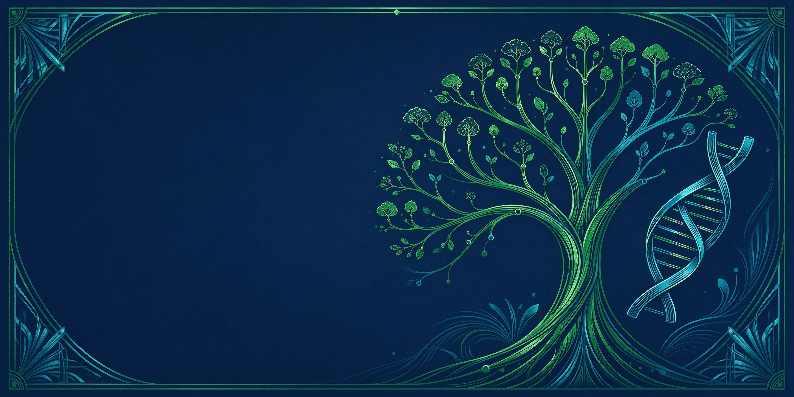
演化博弈论Evolutionary Game Theory
3.1 演化博弈基础与 ESS
演化博弈 Evolutionary Game Theory
常见的博弈分析都默认玩家是完全理性的：他们会计算、会预判、会挑出最优策略。演化博弈做的第一件事，就是把这个假设放宽。
它由 John Maynard Smith 提出，把达尔文的演化思想搬进了决策分析。在这里，行动者不必聪明，他们只依照本能或习惯行事；起决定作用的是选择机制：收益高于种群平均水平（即适应度 fitness）的策略会被更多个体采用，在种群中的比例随时间上升；低于平均的则逐步萎缩、被淘汰。这个过程反复进行，就模拟出了自然选择。
与之相应，选择的单位从个体转向种群或基因。要回答的问题也随之改变：哪一类行为能在一轮轮的淘汰中占据多数，这个多数又是否经得起扰动。
为什么 MC = MR 是一条「定律」？
微观经济学的基本结论是：企业在边际成本 = 边际收益处生产，利润最大。可现实里，没有哪个企业主真的知道自己的 MC 和 MR 曲线在哪。这两个数值事前无从预知，只能在一次次定价、排产、看报表中试探着逼近。
现实中的企业看起来仍在遵守这条法则，原因是不遵守的会被市场淘汰：定价过高丢掉客户，过低亏本关门，长期偏离利润最大化的企业根本活不下来。
这里的机制是：规律在个体「懂得」它之前，就已经被选择机制选出来了。行动者不需要理性，也不必了解经济学；有限理性 + 淘汰就足以让「MC = MR」在种群层面成为一个均衡。
进化稳定策略 ESS
进化稳定策略 (Evolutionarily Stable Strategy, ESS) 可以从两个角度理解。
静态角度：若种群中所有个体都采用某个策略，任何采用不同策略的「突变者」小群体都无法成功侵入，因为自然选择会把突变者淘汰掉。
动态角度：从任意多样化的初始状态出发，采用该策略的个体比例会逐步上升，最终主导整个种群。
ESS 必定是纳什均衡，但纳什均衡不一定是 ESS。ESS 比纳什均衡多一层动态稳定性：它不仅要求「没人想偏离」，还要求「偏离者会被自然选择淘汰」。
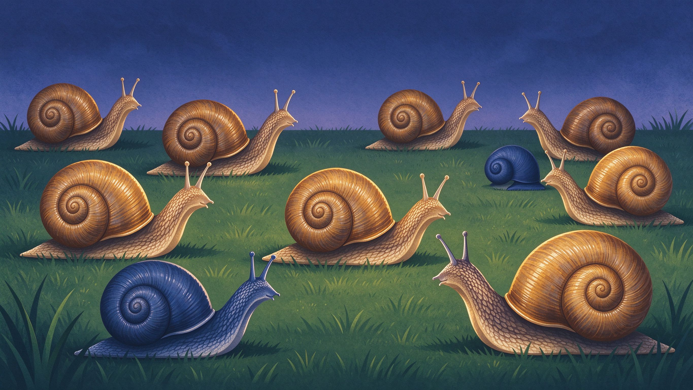
关键规则：两只蜗牛只有壳旋转方向相同才能交配：左旋只能和左旋配，右旋只能和右旋配。
偶然扰动：某次火山爆发等偶然因素掩埋了更多左旋蜗牛，右旋蜗牛稍占多数（比如 55% 对 45%）。
正反馈循环：右旋蜗牛因为数量多，更容易找到配偶、留下更多后代；左旋蜗牛则相反。右旋优势被不断放大。
锁定：最终右旋主导整个种群。这时即使出现一只左旋变异蜗牛，它也几乎找不到配偶，左旋无法侵入右旋种群，右旋就是 ESS。
这是路径依赖与网络效应在生物界的表现：某一方向一旦占据优势，优势会自我强化，直到形成难以撼动的稳定状态。
3.2 鹰鸽博弈的演化分析
回顾 1.4 的 表 9 · 鹰鸽博弈：两玩家争夺资源 $V$，双鹰相遇各付打架成本 $C$。它的混合纳什均衡，是双方各以 $p^* = \dfrac{V}{C}$ 的概率选择「鹰」（$V=100$、$C=150$ 时 $p^* = \dfrac{2}{3}$）。现在换一个问法：种群里鹰和鸽各占多少比例。设鹰的比例为 $x$，鸽为 $1-x$。要注意，同一个 $V/C$ 在 1.4 读作个体的随机概率，在这里读作种群的稳定比例；这也是演化博弈最关键的一步：混合策略均衡在群体层面就是多态 ESS。
从「个体选择」转向「种群比例」
- 对「鹰人」和「鸽人」来说，他们的支付分别是什么？什么比例下两者相等？
- 如果 $x$ 增加，鹰人的收益如何变化？如果 $x$ 减少，鸽人的收益如何变化？
- 审视 $x^*$ 表达式中各个变量的关系，尝试解读其经济含义。
想好之后，用下面讲解器的「下一步 ▶」逐步对照。
种群中的鹰与鸽
群体中鹰的比例为 $x$、鸽为 $1-x$。鹰的支付为 $x\cdot\dfrac{V-C}{2} + (1-x)V$，鸽的支付为 $(1-x)\dfrac{V}{2}$。令两者相等，得 $x^* = \dfrac{V}{C}$。若 $x > V/C$，鹰的收益更低，$x$ 会下降；若 $x < V/C$，$x$ 会上升。稳定点 $x^* = V/C$ 是 ESS。
为什么一个社会不能全是精明人
网上有个说法叫「老实人冗余理论」，也有人叫「老实人经济学」：办公室里总有人顺手把水换了，把杂事接了，值夜班也不推脱；电梯超载时总有人自己退一步。这些事没写进任何制度，却替组织省下大量扯皮。若人人都寸步不让，光是「谁下去」就能僵持十分钟。这是经验之谈，下面用几个博弈模型把它拆开。
一 · 比例由 V 和 C 决定
把「凡事要争、寸步不让」读成鹰，「愿意先退一步、先把事做起来」读成鸽。$V$ 是争到的那点好处，$C$ 是两个人都不让时付出的成本：反复谈判，互相防备，合同与监督，僵持不下。鹰遇鸽时鹰通吃，鹰遇鹰时两败俱伤、各付 $C$。刚才算出的 $x^* = V/C$ 就是鹰的稳定比例，也是「多少人会寸步不让」的答案。
这个式子直接呼应开头的观察。冲突代价越高，$C$ 越大，鹰的比例越低，肯让一步的人越多；当 $C$ 远大于 $V$，群体里几乎全是老实人。反过来，$V$ 变大或 $C$ 被压低，精明人就会变多。于是有了一层很重要的读法：能抬高 $C$ 的法律与追责制度，本身就是在塑造两类人的比例。社会规则也在博弈之内，它改的就是支付矩阵里的数。
二 · 为什么精明人无法一统天下
支撑这个稳定比例的机制，叫负频率依赖选择 (Negative Frequency-Dependent Selection)。一种做法划不划算，取决于群体里有多少人正在这么做。精明人稀少时，遇到的多半是肯让的人，占便宜的收益极高，这类做法会扩散；精明人多到彼此频繁相遇，相互算计使背叛的收益急剧下降，内耗急剧上升。此时肯让一步的人因为能促成合作、省下交易成本，相对价值反而上升，比例被拉回均衡。这是一道负反馈，也是「老实人不会灭绝」的动态解释。
还有个更贴切的写法，叫生产者—掠夺者 (Producer–Scrounger)：有人先去找资源、先把公共的事做起来，有人专等别人做完再搭便车。掠夺者少时收益很高，多到没人生产时就没得可占；生产者太少时，反而因为竞争少而变得划算。两种做法都靠对方的稀缺性吃饭，稳定结局是按某个比例共存。把老实人想成宿主，把投机想成寄生虫，能记住这个机制：寄生虫把宿主吃光之日，也是系统崩塌之时。
三 · 制度是系统补丁：利他惩罚与池惩罚
还有一层问题，凭什么精明人不能无限度地占便宜。公共品实验里反复看到，人愿意自付成本去惩罚破坏规则的人，哪怕这事与自己的收益无关，这叫利他惩罚。更常见的是把它制度化，也就是池惩罚 (Pool Punishment)。每个人事先向一个惩罚池缴费，由法律与监管机构统一处罚违规者，不必自己动手。警察与法庭就是现实里的惩罚池。
没有这套机制，背叛会泛滥，合作随之瓦解；有有效的惩罚，机会主义被压住，合作才变得有利可图。惩罚机制降低的正是整个社会的交易成本，这是「社会规则的维持」在博弈论里的位置。把它和第一层合起来看，制度既抬高 $C$，又保证抬高了的 $C$ 真的会被执行。
四 · 条件合作者：先合作，也能反击
毫无底线、永远退让的老实人，在鹰鸽博弈里会被鹰吃干净。重复博弈的计算机竞赛给出的答案更有意思：胜出的是条件合作者，第一步先合作，此后模仿对方上一轮的做法，也就是 2.4 讲过的以牙还牙。这样的人愿意率先合作，同时保留了可信的报复能力。
所以系统真正需要的冗余，是有能力反击却选择先付出的人。这类人在群体里达到一定比例时，既能开启合作，又能威慑背叛；太少则合作起不来，太多则退回人人自保。它卡在个体收益与群体稳定之间，是一道门槛。
五 · 收束：内耗从哪里来
把四层合起来。老实人与精明人的稳定共存，是演化博弈在特定社会规则下算出来的均衡；这些规则包括冲突代价、惩罚机制，以及声誉系统。老实人承担的隐性功能，是降低交易成本，给制度留出容错缓冲。制度失当的时候，精明人的短期收益偏高，冲突代价 $C$ 偏低，均衡就破了，精明人比例会超过最优水平，社会转入囚徒困境式的相互提防与消耗。这就是「内耗」的博弈论根源。
回到 3.2 开头。同一个 $V/C$，在 1.4 是个体随机出鹰的概率，在这里是种群里鹰的比例，现在还能再读一层，它也是多少人会寸步不让的稳定比例。混合均衡未必是每个人都在两种做法之间摇摆，也可以是一群人各自固定，群体按比例分成两类。
3.3 自我牺牲与汉密尔顿法则
汉密尔顿法则 Hamilton's Rule
当以下条件成立时，利他行为是进化稳定策略 (ESS)：
$r \times B > C$
其中 r 是亲缘系数 (Kinship Coefficient)，衡量受益者与利他者共享基因的程度；B 是受益者获得的增益；C 是利他者付出的成本。直观地说：若受益者携带的共享基因足够多（r 大），且受益足够大（B 大），那么牺牲自己在基因层面反而是划算的。
先算清楚 r：从人的染色体说起
亲缘系数 r 说的事情很朴素：两个人身上的基因有多少是重复的。每个人都有两套染色体，一套从父亲来，一套从母亲来。所以你身上有一半和爸爸重复，一半和妈妈重复，与父母各是 0.5。图里蓝色代表父亲给的那套，红色代表母亲给的那套。
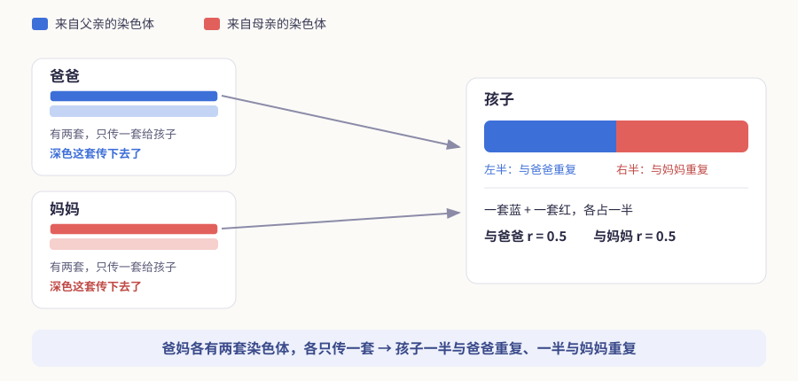
顺着这张图往下看，别的亲属也能算。亲兄弟姐妹同样是各从爸妈那里拿一套，两人拿到的组合不完全一样，平均重复一半，所以是 0.5；只共享一位家长的（同父异母、同母异父）是 0.25。祖父母与孙辈、叔伯与侄辈又隔了一层，也是 0.25；堂表兄弟姐妹再隔一层，是 0.125。把这些数写成通式就是 $r=(1/2)^n$，n 是两人之间隔了几代，隔得越远重复得越少。
换句话说，r = 0.5 的子女相当于「半个你」；两个侄女各 0.25，合起来在基因账上等于一个子女。汉密尔顿法则要比较的，正是这些重复部分的得失。
把 r = 0.5 代进去，这条门槛就具体了。公式 $r \times B > C$ 在父母与子女之间等价于 $B > 2C$，父辈付出一份代价，得让子女拿到双倍以上的增益，这笔基因账才划算。牺牲自己救下三个子女（三人合计 $B = 3$，自己的代价 $C = 1$），$0.5 \times 3 = 1.5 > 1$，值得；只救下一个，$0.5 \times 1 = 0.5$，还不到 1，不值得。
于是被自然选择留下来的，是一套有条件的牺牲指令，收益够大时才动手。愿意在收益超过两倍时牺牲的基因，副本经由获救的子女传了下去；从不出手的基因错过这些机会，收益不足两倍也照样牺牲的基因又白白丢了自己，两类在传递过程中都处于劣势。$r \times B > C$ 说的就是这条门槛。什么情况下该出手，什么情况下不该，由倍数决定。
关键在这里：理性的单位是基因，而不是个体。传统经济学视为「非理性」的利他，在演化视角下其实是在帮另一个自己传播基因。
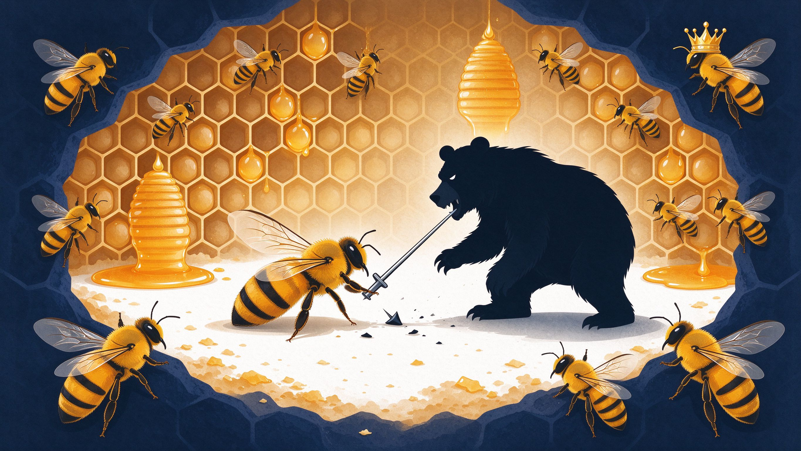
C 时，利他是基因层面的理性。" loading="lazy">先看清蜜蜂的家谱
蜜蜂的亲缘系数之所以特别，是因为它们的繁殖方式和人不一样。蜂王和工蜂都是受精卵发育的，和人一样有两套染色体；雄蜂是没受精的卵发育的，只有一套。雄蜂因此没有爸爸，它产生的精子也全都一模一样。这套机制叫单倍二倍体 (Haplodiploidy)，说白了就是「雄性只有一套，雌性有两套」。
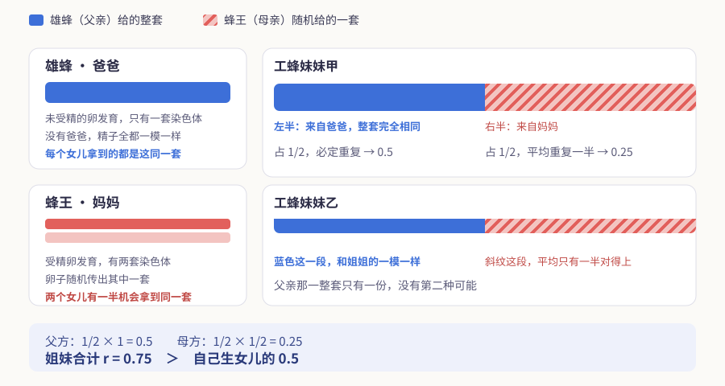
看两个工蜂妹妹。蓝色的那一半来自父亲，而父亲只有一套、精子没有第二种，姐妹俩拿到的必然一模一样，这半边全重复，占 0.5；红色的那一半来自母亲，母亲有两套、卵子随机给一套，姐妹俩有一半机会拿到同一套，这半边平均重复四分之一，占 0.25。加起来就是 r = 0.75。
- 工蜂 ↔ 妹妹（工蜂）：0.75
- 工蜂 ↔ 母亲（蜂王）、自己若能生的女儿：0.5
- 工蜂 ↔ 兄弟（雄蜂）：0.25。雄蜂由未受精卵发育，姐妹身上来自父亲的那一半在兄弟身上完全找不到，只有母方那半边里平均共享一半。
最反直觉的是，工蜂与妹妹比与自己的女儿还亲（0.75 对 0.5）。所以在基因账上，帮蜂王多养妹妹，比自己离开蜂巢去生女儿更划算。带着这张亲缘表，再看下一题就不难了。
还要说明一个限定。0.75 成立于「蜂王只与一只雄蜂交配」。现实里蜂王常与多只雄蜂交配，同巢工蜂并不都是同父姐妹，平均 r 会低于 0.75；下面的计算沿用课本里的经典单次交配设定。
评价利他行为时，观察的单位是基因而不是个体。
看清「自己人」：用上前面那张家谱表，工蜂与妹妹们的 r = 0.75，比自己生女儿的 0.5 还高；人类的亲兄弟姐妹只有 0.5。
算一笔基因账：工蜂牺牲自己(C=1)，却保护了蜂王，让蜂王多生 B = 200 只新蜂，这 200 只里有大量工蜂的妹妹，携带它 75% 的基因。
代入公式：r × B = 0.75 × 200 = 150，远大于 C = 1。150 > 1，因此牺牲是 ESS。
工蜂死亡后，它的基因通过妹妹们得以延续，且延续效果优于不牺牲的情形。利他在个体层面是无私的，在基因层面则提高了自身的传播机会，即基因的自私，这是 Richard Dawkins《自私的基因》中的观点。
3.4 演化博弈与行为经济学
转一下转盘，记住看到的数字，再回答一道估算题。一共 10 题，做完看结果。
两道情境题，凭第一反应选就好，做完看结果。
几组选择，加一次感受打分，做完看结果。
不理性也有规律：行为经济学与演化解释
传统经济学假设一个理性经济人 (Homo Economicus)：偏好稳定，能算清每个选项的效用，只关心最后的总财富。实验结果却反复偏离这套预测，而且偏得有规律。行为经济学 (Behavioral Economics) 研究的就是这类系统性的「不理性」。它没有把理性模型丢掉，只是把心理学里真实的人放了回去。
一 · 三种常见的偏差
下面三种是行为经济学里常被引用的偏差。这类偏差的清单还可以列得很长，这里只取三例，先看它们各自是什么。
- 锚定效应 (Anchoring)：要估计一个数却不知从何下手时，先看到的那个数字会把答案往自己那边拉。经典实验先让受试者转一个做过手脚的转盘，它只会停在 10 或 65，接着问一个和转盘毫无关系的问题，非洲国家在联合国占多少。转到 10 的那组平均猜 25%，转到 65 的那组平均猜 45%。受试者明知数字是随机的、与问题无关，估计还是分成了两截。锚并不替人给出答案，它只是把起点挪了位置；人从起点往回调整时，通常又调得不够。商店先写「原价」再写「现价」，用的就是这一层。
- 心理账户 (Mental Accounting)：标准模型里钱是可替代的，一百块来自工资还是奖金、准备吃饭还是看戏，都只让总财富多了或少了同一百块，决策本该只看这个总数。人并不这么记。丢了演唱会门票的人往往不肯再花等额的钱补一张，丢了同样数额现金的人却照常去买票，账面完全一样，差别只在前者被记进「看戏」、后者被记进「日常开销」。钱还会按来源分账，工资省着花，年终奖或意外之财花起来松得多，尽管能买到的东西没有区别。给钱贴标签、分格记账，就是所谓心理账户。
- 损失厌恶 (Loss Aversion)：等额的亏与赚，给人的分量不一样。丢掉 1000 元的懊恼明显强过捡到 1000 元的开心；要让人肯参加一个输赢各半的赌局，赢的一头通常得开到输的两倍左右，他才觉得划算。这个倍数只是常见量级，会随情境变。更关键的是，赚和亏不按最终有多少钱算，而是相对一个参照点算，现状、预期或刚被告知的数字都可以充当它。于是同一笔结果换个说法，选择就翻面：说「确定拿到 900 元」与「九成机会拿 1000 元」，多数人选前者；说「确定亏 900 元」与「九成机会亏 1000 元」，多数人反而选后者去赌。锚很多时候正是在替我们设这个参照点。
二 · 把尺度拉长：它们曾经合适
知道了这三种偏差长什么样，接下来问它们为什么会存在。
锚定效应：先想清楚「估计」这件事要付出什么。要知道一条河有多宽、一群猎物有多少，最可靠的办法是反复测量再取平均，可这既要有样本，也要有时间。远古两样都缺，手上只有零星线索：昨天走了多远，上次见到的一群有多大，同伴随口报的一个数。抓住眼前这个已知数当起点，再往上或往下调一点，是当时最省力的估计法，而且通常够用。问题出在调整往往不够，起点摆在哪里，答案就跟着往哪里偏。第一节里那个被有意摆好的「原价」，到这里就有了另一层意思：它借用的正是这套省力估计法。
心理账户：钱能买任何东西，这种通用性是很晚才有的。货币出现之前，人手上的东西彼此换不了：粮食放几天会坏，工具能久存却不能充饥，水源被别人占了拿不回来，跟某个人的交情更无法折成一顿饭。各有各的保存期限和用途，混成一笔「总财富」来算反而会出大错，分开记、分开决定才是稳妥的。货币只有几千年历史，把所有东西折算成同一个数字也是这几千年才有的事，分类记账的习惯却还照旧运行。前面那两笔等额的钱被区别对待，原因就在这里：机制还在，能互相折算的货币却是新东西。
损失厌恶：先看两个数字为什么不对称。多找到一份食物，改善的只是今天这一顿，吃饱之后再加一份几乎没有用处；可过冬的存粮少了一半，腿受了伤，失去庇护或同伴，可能直接等不到下一次机会。额外收益有上限，损失却没有下限，自然选择因此把「别失去」的权重调得远高于「多拿一点」。实验里那个两倍上下的倍数，放到这个语境里就不难理解。
三 · 一条阈值，两种表现
损失厌恶能不能算一条普遍规律，至今仍有争论。最直接的挑战是，在现实中人并不是总会躲避风险，反而有时偏好冒险。比如，当一笔钱已经几乎确定要亏掉时，很多人反而愿意赌一把，想翻本；赌性上头、过度自信的人还会高估自己的判断、低估危险，主动去选胜算并不高的路。同样是人，有时显得特别怕损失，又会在某些时候追着不确定的收益跑，实验文献常把这两面记成两种互相矛盾的偏差。
演化视角可以为这种矛盾提供一个统一的解释。这个解释首先会问一个更基本的问题：这个个体离活不下去还有多远。可以设想一条生存线，低于它，个体就熬不到下一次繁殖。当个体的现状在这条线以上时，冒险多得到一份资源不过是多一顿，边际价值很少；可一旦失败，跌回线下，损失却可能致命。在这种情况下，「别失去」的权重会被调高，表现为损失厌恶。当个体的现状在线以下，情况则相反：稳稳守住手上那点东西照样活不了，只有一次大收益才可能把人送回线以上；确定地亏等于必输，赌一把反倒还有活路，这种情况下，个体则表现为不怕损失、敢于冒险。
生存环境还养成了另一套本能：条件合适的时候主动追逐风险，而且这套本能不只属于人。斯金纳箱是个很简单的装置，一只老鼠，一个箱子，箱壁上装一根杠杆，按一下掉一颗食丸。老鼠起先四处乱撞，偶然压到杠杆吃到食物，几次之后就学会主动去按。研究者接着把老鼠分成两组：一组固定每按五次给一颗；另一组把次数打乱，有时按一下就有，有时连按十几下也落空，平均下来同样是五次一颗。结果随机那组按得反而更勤。最后把食丸彻底停掉，固定那组很快不再按，随机那组却还长时间按个不停，像是还在等下一颗。不少赌徒也从棋牌这类还有计算和推理成分的游戏，转向沉迷毫无技巧、纯靠概率的「老虎机」。人和老鼠上瘾的背后是同一套演化留下的算计，收益很大（一份食物）、成本很小（按一下按钮）时，就值得「搏一搏」。这套本能原本帮祖先在食物出现没有规律的环境里多试几次，如今却可以被反过来利用，成了赌场牟利的工具。
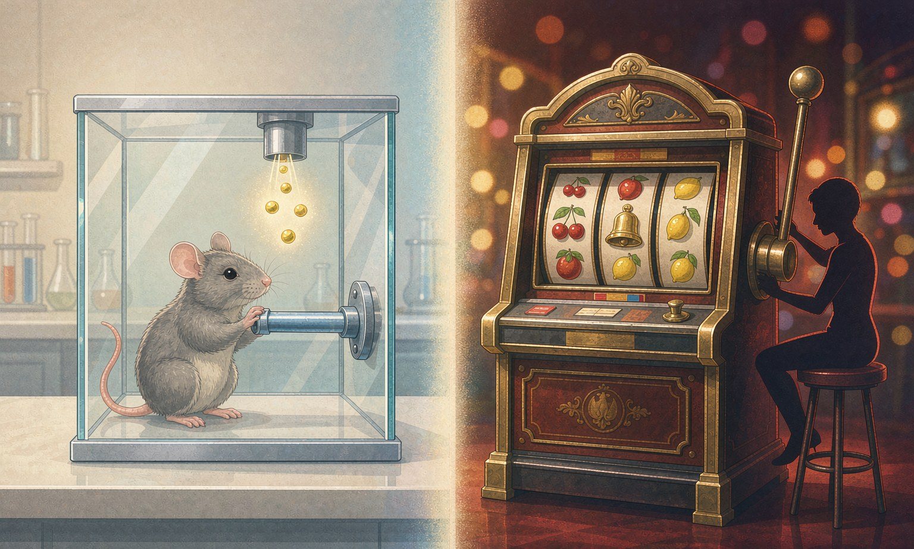
把这种思路带回鹰鸽博弈，如果把个体的资源储备当作状态变量，个体就不再必然属于鹰或属于鸽，群体中的鹰鸽比例不再固定，而是受到其中个体的资源储备情况的影响。当个体的储备高于阈值时，倾向于出鸽，不值得为一点资源受伤；低于阈值时，则应该出鹰，因为不争就可能死，此时受伤代价 $C$ 相对变小，资源价值 $V$ 相对变大。群体整体的环境越差、食物越不可靠，出鹰的个体就越多，「亡命徒」就越多。这一模型解释了为什么当一个社会经济差、社会保障水平差的时候，社会治安就会变差。
四 · 从判断偏差到社会行为
前面三节做的事，是把几条零散的偏差放回同一个支付结构里。行为实验一次只测一种处境，于是记下损失厌恶与过度自信这类彼此矛盾的偏差，还有锚定、心理账户这样给数字和钱贴标签的习惯；演化视角补上的是实验里被固定掉的那个变量，也就是离阈值多远。把它写进支付函数，看似矛盾的反应就成了同一适应度地形上的不同截面。演化博弈问的不只是「人有什么偏差」，还有「什么样的支付结构会同时产生这些偏差」。同一套思路再往外推一步，判断偏差之外的社会行为也能放进来：
- 过度自信 (Overconfidence)：在远古环境中，过度自信的个体更敢于冒险争夺资源与配偶，从而获得更多繁殖机会。冒险有时会失败，但从基因传播的角度看，「自信地去争」比「理性地退缩」更可能留下后代，因此过度自信成为一种 ESS。
- 最后通牒中的拒绝行为：在 2.2 那个「理性预测失败」的实验里，人们常常拒绝不公平的分配，即使拒绝意味着自己也拿不到钱。从单次博弈的理性角度看，这并不划算；但在重复互动的远古部落中，「拒绝不公平」等于向群体发出信号，说明自己不是好欺负的，从而提高了未来谈判中的地位。这种「宁可吃亏也要维护公平」的倾向，因此成为一种 ESS。
- 为理念或为陌生人牺牲 (Self-sacrifice for ideals/strangers)：环保主义、慈善捐赠与志愿行动等行为，从纯粹的基因自私角度难以解释。但在远古部落中，利他行为能提升整个群体的生存概率，间接惠及携带相似基因的同族成员。到了现代社会，这种倾向已超越血缘限制，演变为一种文化层面的进化稳定策略 (Cultural ESS)，靠社会规范、教育与文化传承维持。
当然，这套解释有边界。这些反应有结构，会随处境切换，不等于它们在今天仍然合用。远古要判断的是离生存阈值还有多远，眼前是食物、天气与同伴，如今摆在面前的是标价、百分比和账面数字，而且常常由对手有意摆放，锚可以伪造，参照点可以被话术挪动。机制还在按旧输入计算，算出来的却不再是当初那个问题。这种时间差叫进化失配 (Evolutionary Mismatch)，下一栏会把它展开。这条读法仍有争论，它给的是一条整理现象的线索，不是对所有实验的定论。
五 · 这一支研究的来历
演化解释的是机制从哪来。把这些偏差一条条测出来、写成可检验模型的，是另一条研究线索。
这些快捷判断在认知上分成两套。双系统理论 (Dual-Process Theory) 把思维分为「系统 1」快速、直觉，自动化程度高，与「系统 2」缓慢、理性，需要刻意努力。实验发现，合作意识越强的人越倾向于信任自己的直觉，这提示合作可能与本能有关。这套区分源自认知心理学，把它带进经济学的是丹尼尔·卡尼曼 (Daniel Kahneman)：他与阿莫斯·特沃斯基 (Amos Tversky) 用一系列实验说明，人的判断会系统性地偏离概率与理性，并据此提出前景理论。
2002 年，卡尼曼因「把心理学研究的洞见融入经济学，尤其是不确定条件下的判断与决策」（"for having integrated insights from psychological research into economic science, especially concerning human judgment and decision-making under uncertainty"）获诺贝尔经济学奖，与实验经济学的 Vernon L. Smith 共享；特沃斯基已于 1996 年去世，不在获奖名单里。他把这条研究线索写给大众的书，就是行为经济学里流传最广的《思考，快与慢》(Thinking, Fast and Slow)，书名里的「快」与「慢」正是系统 1 与系统 2。两条线索在这里合上：演化解释了机制为什么存在，实验与模型让它可以被测量、被写进支付函数。第一节里那些被逐一测出的偏差，第三节里那条随处境切换的规则，都是这么来的。
「几百万年」与「几百年」的错配
人类作为生物的起源可追溯到数百万年前，但文明史不足一万年，进入市场化社会更是只有数百年。许多在数百万年演化中写进 DNA 的行为模式，即使已不适应现代社会、尤其不适应市场逻辑，也几乎无法去除。
古典政治哲学与经济学通常把人假设为「出于个体理性而行动」，并认为合作、社会契约与制度之所以成立，是因为它们能增进每个人的福利。另一种解释考虑到人类数百万年的群居历史：合作倾向可能来自这段历史，而把个体理性当作唯一出发点，是较晚才出现的假设。
孟子主张「性善论」，他敏锐地观察到：
「人皆有不忍人之心。……所以谓人皆有不忍人之心者：今人乍见孺子将入于井，皆有怵惕恻隐之心；非所以内交于孺子之父母也，非所以要誉于乡党朋友也，非恶其声而然也。由是观之，无恻隐之心，非人也；无羞恶之心，非人也；无辞让之心，非人也；无是非之心，非人也。恻隐之心，仁之端也；羞恶之心，义之端也；辞让之心，礼之端也；是非之心，智之端也。人之有是四端也，犹其有四体也。」James Legge 英译：All men have a mind which cannot bear to see the sufferings of others. … When I say that all men have a mind which cannot bear to see the sufferings of others, my meaning may be illustrated thus: even now-a-days, if men suddenly see a child about to fall into a well, they will without exception experience a feeling of alarm and distress. They will feel so, not as a ground on which they may gain the favour of the child’s parents, nor as a ground on which they may seek the praise of their neighbours and friends, nor from a dislike to the reputation of having been unmoved by such a thing. From this case we may perceive that the feeling of commiseration is essential to man, that the feeling of shame and dislike is essential to man, that the feeling of modesty and complaisance is essential to man, and that the feeling of approving and disapproving is essential to man. The feeling of commiseration is the principle of benevolence. The feeling of shame and dislike is the principle of righteousness. The feeling of modesty and complaisance is the principle of propriety. The feeling of approving and disapproving is the principle of knowledge. Men have these four principles just as they have their four limbs.
孟子认为，人的许多道德观念如同肢体一样都是天生的。这与「利他、合作是演化塑造的本能」在结论上相当一致，只是论证路径不同：一个从性善出发，一个从基因出发。
延伸阅读 · 《进化心理学：心理的新科学》（David M. Buss，Evolutionary Psychology: The New Science of the Mind）。这本书把上面的时间尺度展开成了一门学科：人的心智带着数百万年自然选择打磨出的一组「心理适应器」，用来应对远古反复出现的生存、择偶、亲代抚育与群居问题。全书按这些适应问题分章，新版还专门讨论了适应机制与现代环境的错配。它解释某种心理为什么会出现，并不等于替它做道德辩护。想继续追问「这些偏差究竟从哪来」，这是最合适的一本入门教材。
两个主流假说的共同点是：基因不一定只通过「自己繁殖」来传播。
亲缘选择假说 (Kin Selection)：同性恋个体不繁殖或少繁殖，但会帮助兄弟姐妹抚养后代，把资源投向携带相似基因的侄子侄女，间接提高基因的平均适应度。
社会亲社会假说 (Sociosexual Hypothesis)：同性恋促进了群体社会凝聚，如男性间形成紧密联盟。联盟成员在群体博弈中占优，更容易获得资源与繁殖机会，基因反而更容易传承。
群体水平 ESS：演化模拟显示，这种模式作为群体水平的 ESS存在，在狩猎采集社会中尤其如此。少量同性恋（约 3–5%）是最优配置：过多会降低整体繁殖，过少则失去社会凝聚带来的收益。
这与汉密尔顿法则一脉相承：自然选择作用的最小单位是基因，而不是个体。
3.5 博弈论与制度经济学
通常把均衡当作要解出来的结果，这里反过来，把它当作前提来看。一个社会靠什么维持秩序，哪些约束真的起作用，用支付、策略与均衡就能说清。
制度是博弈均衡的结果
制度 (Institution) 指的是「大家都这么做、而且谁也不想单独改变」的稳定状态，也就是博弈的一个均衡。这个定义的重点不在形式：制度不等于写在纸上的法律文件。有些规矩没有明文，却实实在在约束着行为，比如排队、让座、按时赴约；它们维持着一个稳定的均衡，所以是制度。反过来，有些条文写得郑重，违反它却不必付出任何代价，它约束不了谁的选择，也就起不到制度的作用。判断的标准是约束是否真的生效，而不是它有没有被正式颁布。
先说被明文制定的那一类。合同把「你敢背叛，我就惩罚你」这句口头威胁写成了白纸黑字，还能请法院强制执行，实际上是把 2.3 讲的触发策略 (Trigger Strategy) 制度化了。
再说没人订立、也没人执法的规矩，比如靠右行走。没有人规定过它，它是从无数次随机互动里长出来的：靠右的人多了，靠左反而危险，于是更多人愿意靠右，这又进一步巩固了它。哈耶克把这类东西称为自发秩序 (Spontaneous Order)；用均衡的语言说，它就是演化出来的 ESS。
反过来，一个制度若不能给违规者带来足够的代价，就守不住，只能停留在纸面上：腐败屡禁不止，是因为被查处的概率和惩罚都太低；劣币驱逐良币，则是因为没有人有动机单独坚持使用良币。
有一种制度，连执法者都不需要。
羌寨的「神树林」：信仰即执法
人类学家王明珂自 1994 年起在岷江上游的羌族村寨做田野调查。他注意到：许多羌寨的后山都保留着一片「神树林」，被视为山神的居所，乡规民约与护林碑明令禁止砍伐、放牧，任何人不得随意动它。
从演化与制度的视角看，这套信仰之所以能稳定延续，很可能是一种自我约束：羌寨大多建在半山坡上，村庄上方的树林一旦被砍光，雨水就会冲刷坡面、造成水土流失甚至泥石流，村寨本身可能因此无法存续。没有形成这种「敬畏树林」文化的社群，也许早已在生态代价中被淘汰。
这套信仰的特别之处在于，它既不需要外部执法者，也不需要每个人懂生态学：信仰本身就是执行机制。这是「制度是博弈均衡」的一个天然实例：规则之所以稳固，是因为守比不守更划算，而违背者会被系统惩罚。
反过来，制度也可能把市场锁死在次优状态：
主要机制是网络效应 (Network Effects) 与转换成本。
互补品与惯性：全世界的键盘、输入法、教程与肌肉记忆都以 QWERTY 为标准，换键盘意味着所有互补品都要重来。
个体理性选择：单独改用 Dvorak 的人，由于其他人仍用 QWERTY，反而无法与他人共用电脑、共享习惯，单方面偏离对自己不利。
群体锁定：没有足够多的人同时切换，Dvorak 无法形成正反馈，始终无法侵入 QWERTY 种群。
经济含义：市场标准可能长期停留在非效率状态。标准本身是协调博弈的均衡，而协调是最难打破的一类均衡。这也为「纳什均衡不一定是帕累托最优」提供了一个现实例子。
从个体行为到社会现象：微观基础与涌现
用博弈论解释社会现象，长处在于它提供了微观基础：每一个总体结果，都能追到具体的人在什么约束下做了什么选择。传统经济学常假设一个代表性主体 (Representative Agent)，仿佛社会上所有人共享同一套偏好、按同一个逻辑行动。这个假设处理总量问题时很方便，但一旦问题的关键就在于「人与人不一样」，它就失灵了：如果所有人都一样，协调问题、囚徒困境，以及挤兑与恐慌都不会发生，而这些恰恰是最需要解释的现象。
博弈论让玩家带着不同的策略、不同的信息与不同的支付进场，于是可以从个体选择推出总体结果。个体各自按自己的处境行动，加总起来却出现了一个没有人设计过的稳定模式，这个过程称为涌现 (Emergence)。价格水平、排队长度，以及行业惯例和社会规范，都是这样出现的：没有谁在统筹，结果却成形了。制度在这套语言里因此是涌现出来的均衡；它一旦稳定，又反过来成为每个人行动的约束。
这样看制度，并不是唯一的方式。社会学更愿意把制度理解为习惯与角色，人类学更愿意把它读成符号与意义，历史学则强调它在特定情境中如何形成。这些视角在具体案例上常常解释得更细，代价是彼此之间不易比较，也不易推广到别的场景。把制度当作均衡、用理性选择的框架去分析，长处正在于通用与可扩展：合同、惯例、信仰与技术标准，都能放进同一套语言里讨论，不同学科的经验材料也因此可以互相参照。两者更像分工，一个负责把案例讲透，一个负责把案例放到可以比较的位置上。
3.6 课后习题
假设一个社会中有不同感情习惯的男女，他们随机相遇，并产生以下结果：
- 当大胆女遇到忠诚男，二人一拍即合，从此幸福快乐地生活在一起；
- 当谨慎女遇到忠诚男，经过一番麻烦的考验，二人最终幸福快乐地生活在一起；
- 当大胆女遇到薄情男，二人一拍即合，薄情男始乱终弃，大胆女黯然神伤；
- 当谨慎女遇到薄情男，薄情男未能通过考验，二人就当从未遇见过。
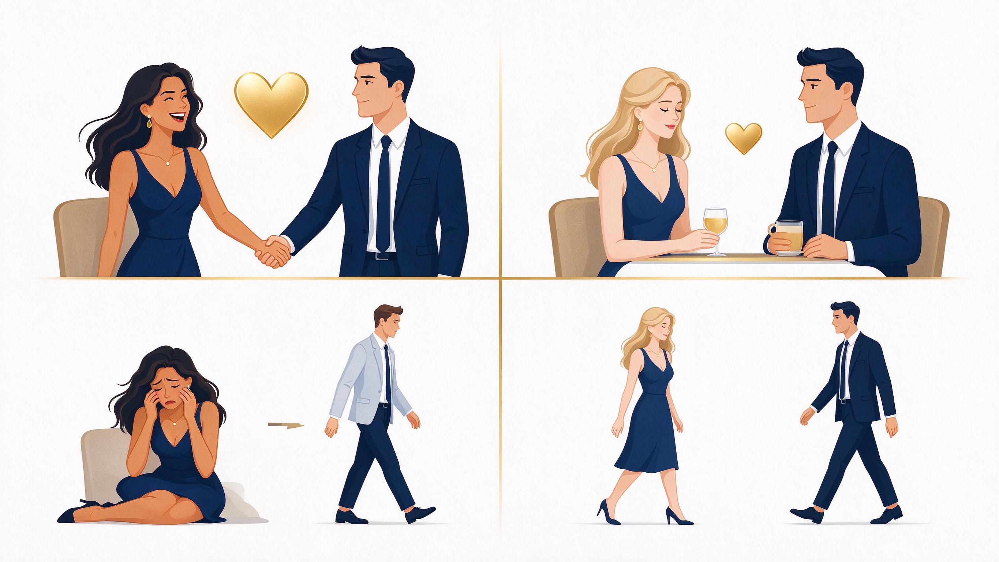
由此总结得到的支付矩阵如下（行 = 女，列 = 男）：
| 女 ＼ 男 | 忠诚 | 薄情 |
|---|---|---|
| 谨慎 | (2, 2) | (0, 0) |
| 大胆 | (5, 5) | (−5, 15) |
最终，社会中忠诚男与谨慎女的比例会是多少？这一比例是否具有稳定性、抗扰动性，即它是不是一个 ESS？
博弈设定：某群居动物中，个体发现天敌时可以选择发出警报。发出警报会让它自己被盯上的概率上升，折算成适应度，代价 C = 1；听到警报的亲属因此得以逃脱，每一个受益亲属获得的适应度收益为 B = 1。
问题(1)：如果受益者是 3 个亲兄弟（亲缘系数 r = 0.5），发出警报是 ESS 吗？
问题(2)：如果受益者是 4 个堂兄弟(r = 0.125)呢？
问题(3)：如果受益者是 5 个半同胞兄弟姐妹(r = 0.25)呢？
问题(4)：把结论一般化。当 B = C = 1 时，受益者人数 n 与亲缘系数 r 之间要满足什么关系，警报行为才可能成为 ESS？
博弈设定：一个种群争夺资源，资源价值 V = 120。两只鹰相遇要打架，双方各承担成本 C = 200；鹰遇鸽，鹰独占资源；鸽遇鸽，平分资源。设种群中鹰的比例为 x。
问题(1)：用 V、C 写出这个博弈的支付矩阵。问题(2)：求鹰的稳定比例 x*。
问题(3)：如果资源价值上升到 V = 160，鹰的比例会怎么变？为什么？
问题(4)：如果打架成本 C 变得极大（双方都「武装到牙齿」），x* 会趋向多少？这对「核威慑下的和平」有什么启示？
总结与复习Review and Knowledge Map
全书知识地图
三章分别处理同时互动、行动顺序与群体演化三种情形。下图给出全部概念及它们之间的位置关系。
三章各自解决什么问题
- 第一章（同时博弈）要回答的是：大家都在同一起点出手时，结局会落在哪里。工具是纳什均衡，以及围绕它的三种可能：唯一、多个、没有纯策略（转向混合）。
- 第二章（序贯博弈）加入先后顺序：出手有先后时，先动的人是否占便宜。工具是博弈树与逆向归纳，由此得到子博弈完美均衡；再往前一步，是重复博弈里的合作条件。
- 第三章（演化博弈）把理性假设放宽：参与者并不算计，只按习惯行事，长期会剩下什么。答案是 ESS，即被选择机制筛出来的稳定行为。
解题流程与工具速查
拿到一个陌生博弈时，可按下面的流程逐步判断。每一步的判断依据在图中给出。
什么时候用哪个工具
| 看到什么 | 用什么方法 | 典型例子 |
|---|---|---|
| 有人不管对方怎么选都占优 | 占优策略 → 占优均衡 | 囚徒困境 |
| 能逐行逐列划掉明显更差的策略 | 重复剔除严格劣策略 IDSDS | 智猪博弈、4×4 练习 |
| 没有占优策略，但圈子能圈到 | 最佳回应标记法（双圈相交） | 3×3 练习 |
| 怎么圈都圈不到纯策略均衡 | 混合策略：让对手无差异 | 点球 / 匹配硬币、税务稽查 |
| 有先后顺序 | 博弈树 + 逆向归纳 → SPNE | 市场进入、海盗分金 |
| 一方先定量、另一方跟 | 斯塔克伯格（先手优势） | 古诺的序贯版 |
| 同一批人反复打交道 | 贴现因子 δ + 触发策略 | 重复囚徒困境、OPEC |
| 问「长期哪类行为会占多数」 | ESS / 种群比例（如 x* = V/C） | 鹰鸽博弈、蜗牛、神树林 |
易错点自查清单
下列条目最容易被说反、算错或想偏，复习时可逐条对照。
最容易出错的地方
- 把「占优均衡」当成「纳什均衡」的同义词。占优均衡一定是纳什均衡，反过来不成立，多数博弈里没人拥有占优策略。
- 圈不到双圈就以为「没有均衡」。那只是没有纯策略均衡；纳什存在定理保证有限博弈一定有混合策略均衡。
- 把「纳什均衡」当成「对大家最好的结果」。囚徒困境的均衡 (2,2) 明显差于 (10,10)；协调问题里也可能卡在差的均衡上。
- 混合均衡里搞错「谁的概率」。解出来的概率是用来让对手无差异的，得到的其实是对方的混合比例。
- 逆向归纳从起点开始猜。必须从树的末端倒着推；顺序颠倒会漏掉后手的真实反应。
- 以为「威胁很凶」就可信。威胁可信与否，看的是事后是否仍然最优；把退路砍掉，威胁才真的成立。
- 把「有限次重复」当成「无限次重复」。有限次可以用倒推证明每轮都背叛（末期效应）；合作需要足够大的 δ，或者「不知道何时结束」。
- 混淆「ESS」与「纳什均衡」。ESS 一定是纳什均衡，但纳什均衡不一定是 ESS，ESS 还要能抵抗变异入侵。
- 汉密尔顿法则里 r 搞错对象。r 是受益者与利他者之间的亲缘系数，不是「利他者与自己」的。
- 把演化博弈理解成「个体也理性」。演化博弈的关键在于，个体不必懂规则，是选择机制把不合规的淘汰掉了。
几组容易混淆的概念
| 概念 A | 概念 B | 关键区别 |
|---|---|---|
| 占优策略 | 纳什均衡 | 前者「不管对方怎么做都最好」；后者只要求「给定对方的选择，我不想变」 |
| 纯策略 | 混合策略 | 前者概率为 1；后者按概率分布随机化 |
| 同时博弈 | 序贯博弈 | 前者用圈最佳回应；后者用博弈树 + 逆向归纳 |
| 纳什均衡 | 子博弈完美均衡 | 后者要求在每个子博弈上都最优，能剔除不可信威胁 |
| 一次性博弈 | 重复博弈 | 后者有「惩罚/奖励」的余地，合作才可能维持 |
| 纳什均衡（静态） | 进化稳定策略 ESS | 前者问「谁想偏离」；后者问「偏进去的变异能否存活」 |
结语与延伸
本节收束全书：博弈论在微观经济学中的位置、它作为研究方法的长处，以及它给理解规则与他人带来的另一种视角。文末附与博弈论相关的诺贝尔经济学奖清单。
博弈论的位置和意义
一 · 微观经济学的重要分支
博弈论是微观经济学的一个重要分支。传统的微观经济学分析的是「一个人或一家企业，如何在给定的约束条件下配置稀缺资源」，博弈论处理的是多个互相影响的决策者会怎么选。两者的差别在于约束条件里有没有别人。一旦我的结果取决于你怎么选、你的结果也取决于我怎么选，单个人面对既定价格与预算的解法就不够用了，「最优」得重新定义。
传统的分析常假设一个代表性主体：「消费者」「生产者」「居民部门」，仿佛所有人共享同一套偏好、按同一个逻辑行动，彼此互不影响。这个假设处理总量问题时很方便，可一旦问题的关键就在人与人的差异，它就解释不了什么。博弈论真正派上用场的，往往是这类假设最站不住的场景：几家寡头定价时互相试探，监管者要预判被监管者会怎么绕开规则，投标人拍卖时猜别人的估值，平台设计一套让人愿意如实报价的机制。这些场合里，别人的选择本身就构成了我决策的前提。
二 · 经济学研究的重要方法
博弈论给经济学分析提供了更精细的微观基础。纳什均衡 (Nash Equilibrium) 给市场均衡换了定义：一个人的选择是不是最优，要看别人怎么选；均衡是所有人互为最佳回应的那个组合。「最优」从单人最大化被改写成互为最佳回应。此后产业组织、劳动与公共财政，以及金融监管与宏观政策规则，都陆续用这套语言重写过一遍。
你可能会觉得，博弈论的假设太干净，和现实中人复杂的行为逻辑隔着距离。模型本来就不必一比一复刻现实，它是对现实的简化；简化得值不值，要看它能不能把推理撑住。在社会科学诸多方法里，博弈论最难得的一点是：从前提假设到最终结论，整段推理都能写成可计算、可检查的形式。前提摆在哪里、哪一步用了什么条件，以及结论怎么推出来，都能逐条追问，也都能被反驳。模型不保证结论正确，但保证结论可以被检验。能写成这种形式的判断，其实不多。
三 · 跨学科研究的桥梁
博弈论最先改变的是制度研究。道格拉斯·诺斯把制度界定为「一个社会的博弈规则，或者更严格地说，是人为设计的、形塑人们互动关系的约束」（"Institutions are the rules of the game in a human society, or, more formally, are the humanly devised constraints that shape human interaction."）。这个定义本身就是博弈论式的。规则写出来是给人遵守的，一条规则能不能立得住，要看在别人都遵守的前提下，我有没有动机违反。沿着这条路往下走，制度被进一步理解为一种自我实施的均衡，不需要外部执法者盯着，大家仍然照做，因为偏离的人会吃亏。这就是「制度即均衡」这条研究路径。
制度可以这样读，法律、政治学与公共管理便有了共同的语言。合同条款为什么这样写，选举规则把谁推到什么位置，一项政策公布之后各方会怎么调整，都能还原成同一组问题：谁有哪些选项，各自预期什么，以及什么状态下没人想单方面改变。分析的单位从制度文本，转成了人在制度下怎么选。
也有一类交叉是反过来的。计算经济学与算法博弈论这一支，是计算科学把「均衡算得出来吗，要算多久，机制在真实规模下跑不跑得动」重新带回经济学，才长出来的方向。理论上成立的均衡，未必能被找出来，也未必能被顺利执行。把它放在这里，是想说明这套工具的边界同样在被别的学科推动，而不只是它单向地往外输出。
四 · 认识社会的新视角
自然科学面对的是与人类无关的稳定规律：行星怎么走、流体怎么流，研究对象不会因为我们改了看法就改行为。经济学的大部分分支也接近这种处境，价格、成本与产量是给定的参数，人在其中做优化。博弈论偏偏多了一层：对面也有人在想。用这门课开头的话说，它是 PVP 而不是 PVE，我的最优取决于你怎么选，你也在猜我怎么选。做题时这是一层技术上的麻烦，放到生活里，它更像一种训练。把对方的处境、感受和可能的反应一并纳入考虑，本来就是一个人走向成熟要学的事。
它还给了另一套看规则的眼光。有些规则写在纸上却没人当真，另一些没有明文，大家却都照着做。哪些该遵守、哪些实际上只是空谈，成年人往往得靠很多年的经验才分得清。演化博弈论在这里给了一个很克制的建议：如果一条规矩你暂时看不懂，却发现周围的人仍在遵循，先跟着做。它背后可能有一套你还没观察到的机制，让「大家都遵守」本身成为一个纳什均衡，给定别人照做，偏离的人反而吃亏。惯例常常是在反复试错里慢慢长出来的，不需要谁先设计好；演化博弈论把这件事写成了可以检验的模型。
所以这套工具最后教的，也许不只是怎么算均衡，而是怎么把对面当成一个同样在作选择的人。把对方的约束当真，许多看着不可理喻的行为，放回他的选项与支付里就说得通了。「仁」讲的是推己及人，是把人当人。这么看，博弈论，仁在其中矣。
与博弈论相关的诺贝尔经济学奖
这份清单从 1993 年算起，一共十二次。其中几届的授奖理由并没有写博弈论，但研究对象正是「制度如何约束互动」，因此一并列入。
| 年份 | 获奖者 | 评审理由（官方公告） | 与博弈论的关系 |
|---|---|---|---|
| 1993 | Douglass North · Robert Fogel | 运用经济理论与量化方法革新经济史研究，以解释经济与制度的变迁 "for having renewed research in economic history by applying economic theory and quantitative methods in order to explain economic and institutional change" | 把制度界定为「人为设计的、形塑人们互动关系的约束」（"Institutions are the rules of the game in a human society, or, more formally, are the humanly devised constraints that shape human interaction."），此后被制度经济学普遍采用；规则之所以成立，是因为给定他人行为时，遵守比违背更划算 |
| 1994 | John Nash · John Harsanyi · Reinhard Selten | 对非合作博弈中均衡的开拓性分析 "for their pioneering analysis of equilibria in the theory of non-cooperative games" | 纳什均衡、子博弈完美均衡、贝叶斯博弈，现代博弈论的基本框架由此确立 |
| 1996 | James Mirrlees · William Vickrey | 非对称信息下激励理论的基础性贡献 "for their fundamental contributions to the economic theory of incentives under asymmetric information" | 对方握着你不知道的信息时，怎么设计激励 |
| 2001 | George Akerlof · Michael Spence · Joseph Stiglitz | 对非对称信息市场运行机制的分析 "for their analyses of markets with asymmetric information" | 逆向选择、信号传递 |
| 2005 | Robert Aumann · Thomas Schelling | 通过博弈论分析加深了对冲突与合作的理解 "for having enhanced our understanding of conflict and cooperation through game-theory analysis" | 重复博弈与相关均衡；威慑、可信承诺、聚焦点 |
| 2007 | Leonid Hurwicz · Eric Maskin · Roger Myerson | 奠定了机制设计理论的基础 "for having laid the foundations of mechanism design theory" | 从「分析规则」转向「设计规则」 |
| 2009 | Elinor Ostrom · Oliver Williamson | 对经济治理的分析，特别是公共池塘资源与企业的边界 "for her analysis of economic governance, especially the commons (E. Ostrom); for his analysis of economic governance, especially the boundaries of the firm (O. E. Williamson)" | 公共池塘资源的自主治理，处理的是没有外部执法者时规则如何自我执行；用均衡的语言说，那是重复博弈的均衡。交易成本与治理结构则接续契约分析 |
| 2012 | Alvin Roth · Lloyd Shapley | 稳定配置理论与市场设计实践 "for the theory of stable allocations and the practice of market design" | 升学、器官分配、住院医的匹配市场设计 |
| 2014 | Jean Tirole | 对市场力量与监管的分析 "for his analysis of market power and regulation" | 寡头定价、进入遏制与监管 |
| 2016 | Oliver Hart · Bengt Holmström | 对契约理论的贡献 "for their contributions to contract theory" | 委托代理与不完全契约 |
| 2020 | Paul Milgrom · Robert Wilson | 改进拍卖理论、发明新的拍卖形式 "for improvements to auction theory and inventions of new auction formats" | 频谱拍卖，机制设计最成功的一次落地 |
| 2024 | Daron Acemoglu · Simon Johnson · James A. Robinson | 研究制度如何形成并影响繁荣 "for studies of how institutions are formed and affect prosperity" | 官方理由同样没写博弈论，用的却是博弈论框架。当权者承诺改革而民众不信，革命威胁下才可能交出权力，问题是可信承诺 |
把授奖理由里没写「博弈论」的几届一并列入，是因为它们问的是同一件事：一套规则凭什么立得住，又会在什么条件下被改写。按年份读下来，早期解决的是「均衡是什么」，后期转向「规则该怎么写」；结语第三节讲的「制度即均衡」，正是这条线索的落点。
本章术语 · 双语 Glossary
第 3 章 · 演化博弈点击卡片展开详细释义与例句。输入关键词可筛选（支持中/英文）。